Ansible Workshop

Copyright © Computacenter 2023
Workshop Overview ↵
Ansible Workshop
Welcome to the Computacenter Ansible Workshop!


Ansible is a radically simple IT automation system. It handles configuration management, application deployment, cloud provisioning, ad-hoc task execution, network automation, and multi-node orchestration.
You will learn all about Ansible:
- starting with the basics of understanding foundational command line activities
- applying what you’ve learned to implement Ansible automation controller to your enterprise use cases.
- learn about the Ansible future and network automation
You’ll start off by writing your first Ansible playbook, work on Jinja templates, and implement higher-level Ansible roles. Next you’ll get started on automation controller, understand inventory and credential management, projects, job templates, surveys, workflows and more.
After finishing this lab you are ready to start using Ansible for your automation requirements.
Time planning
The time required to do the workshops strongly depends on multiple factors: the length of the workshop. the number of participants, how familiar you are with Linux in general and how much discussions are done in between.
Having said that, the exercises themselves should take roughly 4-5 hours, not counting the projects.
Lab Overview

RedHat Demo Environment
Every Workshop attendant has his own demo environment.
Lab Diagram
The Lab environment consist of an Ansible control node (called ansible-1) and three Managed nodes (called node1, node2 and node3). All managed nodes are RHEL 8 hosts and are reachable password-less with SSH.
You will be logged in to the Ansible Control node with the Code editor Visual Studio Code. From here you will be writing all your playbooks and issuing all Ansible CLI commands.
Visual Studio Code
At its heart, Visual Studio Code is a code editor. Like many other code editors, VS Code adopts a common user interface and layout of an explorer on the left, showing all of the files and folders you have access to, and an editor on the right, showing the content of the files you have opened.
Tip
It is highly recommended to use the VS Code Editor to write your playbooks, it has automatic saving and syntax highlighting enabled!
If you want the real YAML challenge, try to write all your playbooks in the terminal/on the command-line. Expect to struggle at first with indentation, which leads to errors trying to run your playbooks.
Nevertheless, mastering to write Ansible playbooks without the help of a Code editor is the best possible way to really understand the YAML syntax. It doesn't take long and is highly rewarding.
Useful VScode configuration
Color theme for syntax highlighting
The Ansible extension supports syntax-highlighting for Ansible content. Depending on the used theme of VScode, this might not be shown correctly. Use the Default Dark+ theme.
Click on File in the top menu bar, click on Preferences and open Settings. Search for theme and choose the Dark+ (default dark) from the drop-down menu.
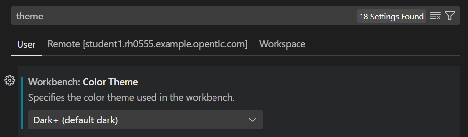
Terminal Scrollback
By default, scrollback of only 1000 lines is possible. If you need to scroll back further, you need to adjust this limit.
Click on File in the top menu bar, click on Preferences and open Settings. Search for scrollback and adjust the number to 10000 in the second configuration parameter (Terminal > Integrated: Scrollback).
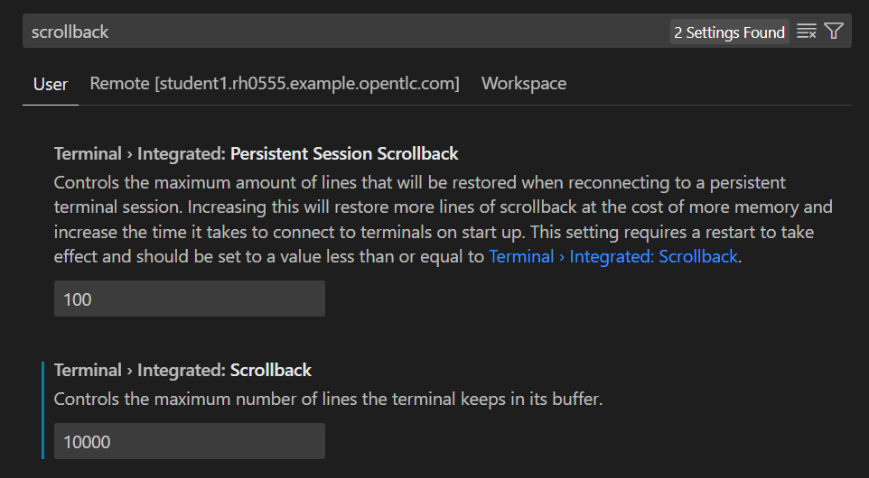
Editor Alternatives
It is recommended to use the VS Code Editor for your exercises, if you don't like it, you may use vi or vim in the terminal directly.
If you don’t like these as an editor as well, feel free to use Nano or Midnight Commander (mc) in the SSH terminal. Here is a quick introduction to both. And no, I’ll refuse to talk about Emacs… ;-)
Midnight Commander (mc)
Mc is more then an editor, it’s a file manager. And it has this nice nineties feel about it… anyway we’ll focus on editing files here.
To open mc at the command-line prompt type:
# mc
Basic Editing
Mc is controlled mainly through the function keys. This can pose all kinds of issues when run in a terminal session, e.g. F10 is most times caught as a shortcut by the terminal window.
To work around this:
-
Try the combination Esc 0 to get F10. Don’t hold Esc!
-
Use the mouse, all mc keys should be clickable, even if they don’t look it.
To create a new file:
-
Type
touch filenamein the command field to create an empty file -
Navigate with the arrow keys in one of the panes to the new file
-
Hit (or click) F4 to start editing the file
To save a file:
- Hit (or click) F2 and confirm with Enter
To exit edit mode with or without saving:
-
Hit Esc 0 or click F10
-
If you did any changes you will be asked "Save before Close?".
-
Choose one of the options "Yes, No, Cancel" by moving with the arrow or Tab keys (or click)
Copy text internally:
-
Position the cursor where you want to start to copy
-
Hit (or click) F3 to start selecting
-
Move the cursor to highlight/select the text you want to copy
-
Hit (or click) F3 again to stop selecting
Paste text internally:
-
Position the cursor where you want to paste the text
-
Hit (or click) F5 to paste a copy of the text
-
Hit (or select) F6 to cut the text and paste it here
Copy text from external source:
-
mark the text with the mouse, e.g. from the lab guide
-
right-click → Copy
Paste text from external source:
- Click Edit → Paste in the terminal menu at the top
Short Intro to the Nano Editor
If you don’t like Vim and you feel too young for Midnight Commander use Nano, a simple to use command line editor.
Basic Commands
Tip
Ctrl or Alt means press and hold the Control or Alt key and then press the character after the dash.
To create a new file or open an existing file:
# nano playbook.yml
Tip
When Nano asks for confirmation, it expects a y for yes or n for no.
To save the current file in Nano:
- Type Ctrl+O
Tip
Depending if the file was changed or not Nano will ask for confirmation and the file name.
To leave Nano without saving the file (if something went wrong while editing and you just want out without changing anything):
- Type Ctrl+X n Enter
Copy and paste external text:
-
mark the text with the mouse, e.g. from the lab guide
-
right-click → Copy
-
right-click into the Nano terminal window, then click Paste
Ended: Workshop Overview
Ansible Basics ↵
Overview
The first workshop day is all about getting to know Ansible and learning to write your first Ansible Playbooks.

You will complete the following exercises today:
- Exercise 1 - Check the Prerequisites
- Exercise 2 - The Ansible Basics
- Exercise 3 - Writing your first Playbook
- Exercise 4 - Using Variables
- Exercise 5 - Work with conditionals
- Exercise 6 - Run tasks multiple times
- Exercise 7 - Trigger changes with Handlers
- Exercise 8 - Templating with Jinja2
- Exercise 9 - Reusability with Roles
1 - Check the Prerequisites
Objective
- Understand the lab topology and how to access the environment.
- Understand how to work the workshop exercises
- Understand challenge labs
These first few lab exercises will be exploring the command-line utilities of the Ansible Automation Platform. This includes
- ansible-core - the base executable that provides the framework, language and functions that underpin the Ansible Automation Platform. It also includes various cli tools like
ansible,ansible-playbookandansible-doc. Ansible Core acts as the bridge between the upstream community with the free and open source Ansible and connects it to the downstream enterprise automation offering from Red Hat, the Ansible Automation Platform. - ansible-navigator - a command line utility and text-based user interface (TUI) for running and developing Ansible automation content.
- Execution Environments - not specifically covered in this workshop (day 1) because the built-in Ansible Execution Environments already included all the Red Hat supported collections which includes all the collections we use for this workshop. Execution Environments are container images that can be utilized as Ansible execution.
- ansible-builder - not specifically covered in this workshop,
ansible-builderis a command line utility to automate the process of building Execution Environments.
If you need more information on new Ansible Automation Platform components bookmark this landing page https://red.ht/AAP-20
We will be using especially the ansible-core executable and the CLI tools it provides, as currently (Q1/2023) it is still the main interface to interact with Ansible.
In the (near) future this will be replaced/supplemented by the Ansible Navigator, which on the one hand brings more useful additional features and in the end serves a much greater purpose than just be a drop in replacement or alias to the currently used Ansible utilities. It requires a broader introduction and explanation regarding the use of containers and collections, which we will discuss on workshop day 3.
Still, although we will be using the ansible-core executable in all exercises, it is shown how to also achieve everything using the ansible-navigator utility in a separate tab.
[student@ansible-1 ~]$ ansible-playbook --help
usage: ansible-playbook [-h] [--version] [-v] [--private-key PRIVATE_KEY_FILE] [-u REMOTE_USER] [-c CONNECTION] [-T TIMEOUT] [--ssh-common-args SSH_COMMON_ARGS]
[--sftp-extra-args SFTP_EXTRA_ARGS] [--scp-extra-args SCP_EXTRA_ARGS] [--ssh-extra-args SSH_EXTRA_ARGS]
[-k | --connection-password-file CONNECTION_PASSWORD_FILE] [--force-handlers] [--flush-cache] [-b] [--become-method BECOME_METHOD] [--become-user BECOME_USER]
[-K | --become-password-file BECOME_PASSWORD_FILE] [-t TAGS] [--skip-tags SKIP_TAGS] [-C] [--syntax-check] [-D] [-i INVENTORY] [--list-hosts] [-l SUBSET]
[-e EXTRA_VARS] [--vault-id VAULT_IDS] [--ask-vault-password | --vault-password-file VAULT_PASSWORD_FILES] [-f FORKS] [-M MODULE_PATH] [--list-tasks]
[--list-tags] [--step] [--start-at-task START_AT_TASK]
playbook [playbook ...]
Runs Ansible playbooks, executing the defined tasks on the targeted hosts.
positional arguments:
playbook Playbook(s)
optional arguments:
[...]
Note
By default, the ansible-navigator will start in the interactive mode. This will launch the navigator in the Text-based User Interface (TUI) mode.
If you want to use the tool the same way as with the normal ansible-playbook command, provide the parameter -m stdout which forces the output to the command-line (though, this prevents you from experiencing the cool features of the navigator).
[student@ansible-1 ~]$ ansible-navigator --help
usage: ansible-navigator [-h] [--version] [--rad ANSIBLE_RUNNER_ARTIFACT_DIR] [--rac ANSIBLE_RUNNER_ROTATE_ARTIFACTS_COUNT] [--rt ANSIBLE_RUNNER_TIMEOUT]
[--cdcp COLLECTION_DOC_CACHE_PATH] [--ce CONTAINER_ENGINE] [--co CONTAINER_OPTIONS [CONTAINER_OPTIONS ...]] [--dc DISPLAY_COLOR] [--ecmd EDITOR_COMMAND]
[--econ EDITOR_CONSOLE] [--ee EXECUTION_ENVIRONMENT] [--eei EXECUTION_ENVIRONMENT_IMAGE]
[--eev EXECUTION_ENVIRONMENT_VOLUME_MOUNTS [EXECUTION_ENVIRONMENT_VOLUME_MOUNTS ...]] [--la LOG_APPEND] [--lf LOG_FILE] [--ll LOG_LEVEL] [-m MODE] [--osc4 OSC4]
[--penv PASS_ENVIRONMENT_VARIABLE [PASS_ENVIRONMENT_VARIABLE ...]] [--pp PULL_POLICY] [--senv SET_ENVIRONMENT_VARIABLE [SET_ENVIRONMENT_VARIABLE ...]]
{subcommand} --help ...
optional arguments:
[...]
Info
Although the tab is titled Ansible, this can be any of the classic utilities provided by the ansible-core executable. The Navigator tab uses the same utils but acts as an abstraction layer.
Guide
Your Lab Environment
In this lab you work in a pre-configured lab environment. You will have access to the following hosts:
| Role | Inventory name |
|---|---|
| Ansible Control Host | ansible-1 |
| Managed Host 1 | node1 |
| Managed Host 2 | node2 |
| Managed Host 3 | node3 |
Every host is reachable via SSH.
Step 1 - Access the Environment
Connect to Visual Studio Code from the Workshop launch page (provided by your instructor). The password is provided below the WebUI link.
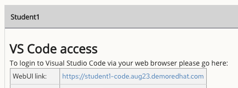
Type in the provided password to connect.

Clicking on File → Open Folder... in the menu bar and open your home directory in Visual Studio Code (this folder should already be shown in the Open Folder pop-up and called /home/student. This will reload your browser window.
Step 2 - Using the Terminal
Open a terminal in Visual Studio Code:

Navigate to the lab_inventory directory on the Ansible control node terminal.
[student@ansible-1 ~]$ cd lab_inventory
[student@ansible-1 lab_inventory]$ pwd
/home/student/lab_inventory
[student@ansible-1 lab_inventory]$ ls
[student@ansible-1 lab_inventory]$
hosts
[student@ansible-1 lab_inventory]$ cd ..
[student@ansible-1 ~]$
~- the tilde in this context is a shortcut for the home directory, i.e./home/studentcd- Linux command to change directorypwd- Linux command for print working directory. This will show the full path to the current working directory.
Step 3 - Challenge Labs
You will soon discover that many chapters in this lab guide come with a "Challenge Lab" section. These labs are meant to give you a small task to solve using what you have learned so far. The solution of the task is shown underneath a warning sign.
2 - The Ansible Basics
Objective
In this exercise, we are going to explore the Ansible command line utility ansible-inventory to learn how to work with inventory files, using the utility ansible to run commands on hosts in the inventory file and getting help by the ansible-doc utility.
The goal is to familiarize yourself with some of the different cli tools Ansible provides and how it can be used to enrich your Ansible experience.
This exercise will cover
- Working with inventory files
- Locating and understanding an
iniformatted inventory file - Running commands on inventory groups with Ansible Ad-Hoc commands
- Listing modules and getting help when trying to use them
Guide
Step 1 - Check the infrastructure
The Ansible master nodes by default communicates via SSH with all managed hosts. As we are automating Linux hosts, this is fine and we need to make sure that we can reach every node with SSH.
If you intend to automate hosts that can't be reached with the default method, e.g. Windows hosts, network infrastructure nodes, firewall hosts and so on, you need to instruct Ansible to use another communication method. In most cases, this is very easy and only requires setting a certain variable. But, let's focus on automating Linux nodes first.
You can reach all your managed nodes (the hosts that you want to automate) with password-less SSH, you won't need to enter a password (or a user) when connecting to the nodes.
Try it out, SSH to node1:
As you can see, you are now the user ec2-user on node1. Leave node1 again:
You can also connect to node2 and node3 with the same method. When you are finished, make sure you are back on your Ansible Control node (ansible-1), only here you can execute Ansible commands (as the Ansible binary is only installed on the Controller, Ansible works agent-less).
Step 2 - Work with your Inventory
An inventory file is a text file that specifies the nodes that will be managed by the control machine. The nodes to be managed may include a list of hostnames and/or IP addresses of those nodes. The inventory file allows for nodes to be organized into groups by declaring a host group name within square brackets ([ ]).
To use the ansible-inventory command for host management, you need to provide an inventory file which defines a list of hosts to be managed from the control node.
In this lab, the inventory is provided by your instructor. The inventory file is an ini formatted file listing your hosts, sorted in groups, additionally providing some variables. It looks like:
[web]
node1 ansible_host=<X.X.X.X>
node2 ansible_host=<Y.Y.Y.Y>
node3 ansible_host=<Z.Z.Z.Z>
[control]
ansible-1 ansible_host=44.55.66.77
Ansible is already configured to use the inventory specific to your environment. We will show you in the next step how that is done. For now, we will execute some simple commands to work with the inventory.
To reference all the inventory hosts, you supply a pattern to the ansible-inventory command. The --list option can be useful for displaying all the hosts that are part of an inventory file including what groups they are associated with.
[student@ansible-1 ~]$ ansible-inventory --list
{
"_meta": {
"hostvars": {
"ansible-1": {
"ansible_host": "3.236.186.92"
},
"node1": {
"ansible_host": "3.239.234.187"
},
"node2": {
"ansible_host": "75.101.228.151"
},
"node3": {
"ansible_host": "100.27.38.142"
}
}
},
"all": {
"children": [
"control",
"ungrouped",
"web"
]
},
"control": {
"hosts": [
"ansible-1"
]
},
"web": {
"hosts": [
"node1",
"node2",
"node3"
]
}
}
[student@ansible-1 ~]$ ansible-navigator inventory --list -m stdout
{
"_meta": {
"hostvars": {
"ansible-1": {
"ansible_host": "3.236.186.92"
},
"node1": {
"ansible_host": "3.239.234.187"
},
"node2": {
"ansible_host": "75.101.228.151"
},
"node3": {
"ansible_host": "100.27.38.142"
}
}
},
"all": {
"children": [
"control",
"ungrouped",
"web"
]
},
"control": {
"hosts": [
"ansible-1"
]
},
"web": {
"hosts": [
"node1",
"node2",
"node3"
]
}
}
If --list is too verbose, the option of --graph can be used to provide a more condensed version of --list.
We can clearly see that nodes: node1, node2, node3 are part of the web group, while ansible-1 is part of the control group.
An inventory file can contain a lot more information, it can organize your hosts in groups or define variables. In our example, the current inventory has the groups web and control.
Using the ansible-inventory command, we can also run commands that provide information only for one host or group. For example, give the following commands a try to see their output.
Tip
The inventory can contain more data.
Step 3 - Use the inventory with ad-hoc commands
An Ansible ad hoc command uses the ansible command-line tool to automate a single task on one or more managed nodes. Ad hoc commands are quick and easy, but they are not reusable. So why learn about ad hoc commands first? Ad hoc commands demonstrate the simplicity and power of Ansible. The concepts you learn here will port over directly to the playbook language.
Ad hoc commands are great for tasks you repeat rarely. For example, if you want to power off all the machines in your lab for Christmas vacation, you could execute a quick one-liner in Ansible without writing a playbook. An ad hoc command looks like this:
Ad hoc commands can be used perfectly to check if all hosts in your inventory are reachable. Ansible offers the ping module for that (this is not a real ICMP ping, though). Let's try to reach all hosts of the web group:
[student@ansible-1 ~]$ ansible web -m ping
node2 | SUCCESS => {
"ansible_facts": {
"discovered_interpreter_python": "/usr/libexec/platform-python"
},
"changed": false,
"ping": "pong"
}
node3 | SUCCESS => {
"ansible_facts": {
"discovered_interpreter_python": "/usr/libexec/platform-python"
},
"changed": false,
"ping": "pong"
}
node1 | SUCCESS => {
"ansible_facts": {
"discovered_interpreter_python": "/usr/libexec/platform-python"
},
"changed": false,
"ping": "pong"
}
Success! All three nodes are reachable, we get a pong back, we proved that we can establish a SSH connection and that the node(s) have a usable Python interpreter.
Try to run the same ad hoc command against the control group.
[student@ansible-1 ~]$ ansible control -m ping
ansible-1 | SUCCESS => {
"ansible_facts": {
"discovered_interpreter_python": "/usr/libexec/platform-python"
},
"changed": false,
"ping": "pong"
}
Let's play around with ad hoc commands a bit more. You can use every module that Ansible provides with ad hoc commands, we will learn more about modules later today. By default, Ansible will use the command module, you can send every linux command you want to all managed nodes, the arguments are provided with the -a parameter:
[student@ansible-1 ~]$ ansible web -m command -a "cat /etc/os-release"
node2 | CHANGED | rc=0 >>
NAME="Red Hat Enterprise Linux"
VERSION="8.5 (Ootpa)"
ID="rhel"
ID_LIKE="fedora"
VERSION_ID="8.5"
PLATFORM_ID="platform:el8"
PRETTY_NAME="Red Hat Enterprise Linux 8.5 (Ootpa)"
ANSI_COLOR="0;31"
CPE_NAME="cpe:/o:redhat:enterprise_linux:8::baseos"
HOME_URL="https://www.redhat.com/"
DOCUMENTATION_URL="https://access.redhat.com/documentation/red_hat_enterprise_linux/8/"
BUG_REPORT_URL="https://bugzilla.redhat.com/"
REDHAT_BUGZILLA_PRODUCT="Red Hat Enterprise Linux 8"
REDHAT_BUGZILLA_PRODUCT_VERSION=8.5
REDHAT_SUPPORT_PRODUCT="Red Hat Enterprise Linux"
REDHAT_SUPPORT_PRODUCT_VERSION="8.5"
node3 | CHANGED | rc=0 >>
NAME="Red Hat Enterprise Linux"
VERSION="8.5 (Ootpa)"
ID="rhel"
ID_LIKE="fedora"
VERSION_ID="8.5"
PLATFORM_ID="platform:el8"
PRETTY_NAME="Red Hat Enterprise Linux 8.5 (Ootpa)"
ANSI_COLOR="0;31"
CPE_NAME="cpe:/o:redhat:enterprise_linux:8::baseos"
HOME_URL="https://www.redhat.com/"
DOCUMENTATION_URL="https://access.redhat.com/documentation/red_hat_enterprise_linux/8/"
BUG_REPORT_URL="https://bugzilla.redhat.com/"
REDHAT_BUGZILLA_PRODUCT="Red Hat Enterprise Linux 8"
REDHAT_BUGZILLA_PRODUCT_VERSION=8.5
REDHAT_SUPPORT_PRODUCT="Red Hat Enterprise Linux"
REDHAT_SUPPORT_PRODUCT_VERSION="8.5"
node1 | CHANGED | rc=0 >>
NAME="Red Hat Enterprise Linux"
VERSION="8.5 (Ootpa)"
ID="rhel"
ID_LIKE="fedora"
VERSION_ID="8.5"
PLATFORM_ID="platform:el8"
PRETTY_NAME="Red Hat Enterprise Linux 8.5 (Ootpa)"
ANSI_COLOR="0;31"
CPE_NAME="cpe:/o:redhat:enterprise_linux:8::baseos"
HOME_URL="https://www.redhat.com/"
DOCUMENTATION_URL="https://access.redhat.com/documentation/red_hat_enterprise_linux/8/"
BUG_REPORT_URL="https://bugzilla.redhat.com/"
REDHAT_BUGZILLA_PRODUCT="Red Hat Enterprise Linux 8"
REDHAT_BUGZILLA_PRODUCT_VERSION=8.5
REDHAT_SUPPORT_PRODUCT="Red Hat Enterprise Linux"
REDHAT_SUPPORT_PRODUCT_VERSION="8.5"
You can shorten the command and leave out -m command as this module is used by default:
[student@ansible-1 ~]$ ansible control -a "uname -a"
ansible-1 | CHANGED | rc=0 >>
Linux ansible-1.example.com 4.18.0-348.12.2.el8_5.x86_64 #1 SMP Mon Jan 17 07:06:06 EST 2022 x86_64 x86_64 x86_64 GNU/Linux
Ad hoc command are very useful to gather information about your managed nodes, the setup module is used. Try that against one host alone (so you won't get overwhelmed with output):
[student@ansible-1 ~]$ ansible node1 -m setup
node1 | SUCCESS => {
"ansible_facts": {
"ansible_all_ipv4_addresses": [
"172.16.9.82"
],
"ansible_all_ipv6_addresses": [
"fe80::a4:bff:fea5:6d70"
],
"ansible_apparmor": {
"status": "disabled"
},
"ansible_architecture": "x86_64",
"ansible_bios_date": "10/16/2017",
"ansible_bios_vendor": "Amazon EC2",
"ansible_bios_version": "1.0",
...
You will get loads of useful information and you can use every bit as variables in your playbooks later on! We will use facts in a later exercise again.
3 - Writing your first Playbook
Objective
This exercise covers using Ansible to build two Apache web servers on Red Hat Enterprise Linux. This exercise covers the following Ansible fundamentals:
- Understanding Ansible module parameters
- Understanding and using the following modules
- Understanding Idempotence and how Ansible modules can be idempotent
Guide
Playbooks are files which describe the desired configurations or steps to implement on managed hosts. Playbooks can change lengthy, complex administrative tasks into easily repeatable routines with predictable and successful outcomes.
A playbook can have multiple plays and a play can have one or multiple tasks. In a task a module is called, like the modules in the previous chapter. The goal of a play is to map a group of hosts. The goal of a task is to implement modules against those hosts.
Tip
Here is a nice analogy: When Ansible modules are the tools in your workshop, the inventory is the materials and the Playbooks are the instructions.
Step 1 - Playbook Basics
Playbooks are text files written in YAML format and therefore need:
-
to start with three dashes (
---) -
proper indentation using spaces and not tabs!
There are some important concepts:
-
hosts: the managed hosts to perform the tasks on
-
tasks: the operations to be performed by invoking Ansible modules and passing them the necessary options
-
become: privilege escalation in playbooks
Warning
The ordering of the contents within a Playbook is important, because Ansible executes plays and tasks in the order they are presented.
A Playbook should be idempotent, so if a Playbook is run once to put the hosts in the correct state, it should be safe to run it a second time and it should make no further changes to the hosts.
Tip
Most Ansible modules are idempotent, so it is relatively easy to ensure this is true.
Step 2 - Directory Structure and files for your Playbook
Enough theory, it’s time to create your first Ansible playbook. In this lab you create a playbook to set up an Apache web server in three steps:
- Install httpd package
- Enable/start httpd service
- Copy over an web.html file to each web host
This Playbook makes sure the package containing the Apache web server is installed on node1.
There is a best practice Guide on the preferred directory structures for playbooks. We strongly encourage you to read and understand these practices as you develop your Ansible skills.
That said, our playbook today is very basic and creating a complex structure will just confuse things.
Instead, we are going to create a very simple directory structure for our playbook, and add just a couple of files to it.
On your control host ansible-1, create a directory called ansible-files in your home directory and change directories into it:
Add a file called apache.yml with the following content. As discussed in the previous exercises, use vi/vim or, if you are new to editors on the command line, check out the editor alternatives again.
This shows one of Ansible’s strengths: The Playbook syntax is easy to read and understand. In this Playbook:
- A name is given for the play via
name:. - The host to run the playbook against is defined via
hosts:. - We enable user privilege escalation with
become:.
Tip
You obviously need to use privilege escalation to install a package or run any other task that requires root permissions. This is done in the Playbook by become: true.
Now that we've defined the play, let's add a task to get something done. We will add a task in which yum will ensure that the Apache package is installed in the latest version. Modify the file so that it looks like the following listing:
---
- name: Apache server installed
hosts: node1
become: true
tasks:
- name: Install Apache package
ansible.builtin.yum:
name: httpd
state: present
Tip
Since playbooks are written in YAML, alignment of the lines and keywords is crucial. Make sure to vertically align the t in task with the b in become. Once you are more familiar with Ansible, make sure to take some time and study a bit the YAML Syntax.
In the added lines:
- We started the tasks part with the keyword
tasks:. - A task is named and the module for the task is referenced. Here it uses the
yummodule. - Parameters for the module are added:
name:to identify the package namestate:to define the wanted state of the package
Tip
The module parameters are individual to each module. If in doubt, look them up again with ansible-doc.
Save your playbook and exit your editor.
Step 3 - Running the Playbook
To run your playbook, use the ansible-playbook <playbook> command as follows:
What does Invalid callback for stdout specified mean?
If you see this error, this is not your fault, but a missing plugin.
In the demo environment, only the ansible-core package is installed. The missing plugin (a callback plugin formats the output Ansible is producing) is not part of the ansible.builtin collection, you need to install it.
If you want to know where this configuration is stored, take a look at the following tip.
Tip
The existing /etc/ansible/ansible.cfg file provides the location of your inventory file. If this was not set within your ansible.cfg file, the command to run the playbook would be:
The configuration file does set some more parameters, take a look. If you want to know which config file is used and where it is stored, run ansible --version. The output shows the currently used config file.
Once the playbook has completed, connect to node1 via SSH to make sure Apache has been installed:
[student@ansible-1 ansible-files]$ ssh node1
Last login: Wed May 15 14:03:45 2019 from 44.55.66.77
Managed by Ansible
Use the command rpm -qi httpd to verify httpd is installed:
Log out of node1 with the command exit so that you are back on the control host and verify the installed package with an Ansible playbook named package.yml. Create the file and paste in the following content:
---
- name: Check packages
hosts: node1
become: true
vars:
package: "httpd"
tasks:
- name: Gather the package facts
ansible.builtin.package_facts:
manager: auto
- name: Output message if package is installed
ansible.builtin.debug:
msg: "{{ package }} in Version {{ ansible_facts.packages[package][0].version }} is installed!"
Note
The playbook (and some of the following playbooks) make use of variables, you will learn about them in the next chapter.
The playbook has two tasks, the first one uses the package_facts module, it does what it says, it gathers information about packages. These facts are not gathered by default with the "Gather facts" tasks (which uses the setup module) and must be collected separately.
The second task uses the debug module. The variable ansible_facts is extended with the packages key, which contains a dictionary with all packages installed on the managed node. The httpd package could be installed in multiple versions, therefore every package key, in our case httpd, is a list. We have installed only one version of httpd (thus, we have a list with only one element), we get the version of httpd with [0].version.
The output should look like this:
PLAY [Check packages] **********************************************************
TASK [Gathering Facts] *********************************************************
ok: [ansible]
TASK [Gather the package facts] ************************************************
ok: [ansible]
TASK [Check whether a httpd is installed] *************************************
ok: [ansible] => {
"msg": "httpd 2.4.37 is installed!"
}
PLAY RECAP *********************************************************************
ansible : ok=3 changed=0 unreachable=0 failed=0 skipped=0 rescued=0 ignored=0
Execute the command ansible-playbook apache.yml for a second time, and compare the output.
Step 4 - Add one more task
The next part of the Ansible playbook makes sure the Apache application is enabled and started on node1.
On the control host, as your student user, edit the file ~/ansible-files/apache.yml to add a second task using the service module. The Playbook should now look like this:
---
- name: Apache server installation
hosts: node1
become: true
tasks:
- name: Install Apache package
ansible.builtin.yum:
name: httpd
state: present
- name: Ensure Apache is enabled and running
ansible.builtin.service:
name: httpd.service
enabled: true
state: started
What exactly did we do?
- a second task named "Apache enabled and running" is created
- a module is specified (
service) - The module
servicetakes the name of the service (httpd), if it should be permanently set (enabled), and its current state (started)
Thus with the second task we make sure the Apache server is indeed running on the target machine. Run your extended Playbook:
You may also run the playbook in interactive mode:
Notice in the output, we see the play had 1 "CHANGED" shown in yellow. Press 0 to enter the play output, you can see that task 2, "Ensure Apache is enabled and running", was the task that incorporated the latest change by the "CHANGED" value being set to True and highlighted in yellow.
-
Run the playbook a second time to get used to the change in the output.
-
Use an Ansible playbook labeled
service_state.ymlto make sure the Apache (httpd) service is running onnode1.
---
- name: Check Service status
hosts: node1
become: true
vars:
service: "httpd.service"
tasks:
- name: Get state of all service
ansible.builtin.service_facts:
- name: Output service state of {{ service }}
ansible.builtin.debug:
msg: "{{ ansible_facts['services'][service]['state'] }}"
This would be the same as checking the service state manually on node1 with: systemctl status httpd.
Step 5 - Extend your Playbook
Check that the tasks were executed correctly and Apache is accepting connections: Make an HTTP request using Ansible’s uri module in a playbook named check_httpd.yml from the control node to node1.
---
- name: Check URL
hosts: control
vars:
node: "node1"
tasks:
- name: Check that you can connect (GET) to a page and it returns a status 200
ansible.builtin.uri:
url: "http://{{ node }}"
Warning
Expect a lot of red lines and a 403 status!
There are a lot of red lines and an error: As long as there is not at least an index.html file to be served by Apache, it will throw an ugly "HTTP Error 403: Forbidden" status and Ansible will report an error.
So why not use Ansible to deploy a simple index.html file? On the ansible control host, as the student user, create the directory files to hold file resources in ~/ansible-files/:
Then create the file ~/ansible-files/files/web.html on the control node:
In a previous example, you used Ansible’s copy module to write text supplied on the command line into a file. Now you’ll use the module in your playbook to copy a file.
On the control node as your student user edit the file ~/ansible-files/apache.yml and add a new task utilizing the copy module. It should now look like this:
---
- name: Apache server installation
hosts: node1
become: true
tasks:
- name: Install Apache package
ansible.builtin.yum:
name: httpd
state: present
- name: Ensure Apache is enabled and running
ansible.builtin.service:
name: httpd.service
enabled: true
state: started
- name: Copy file for webserver index
ansible.builtin.copy:
src: web.html
dest: /var/www/html/index.html
mode: "0644"
What does this new copy task do? The new task uses the copy module and defines the source and destination options for the copy operation as parameters.
Run your extended Playbook:
-
Have a good look at the output, notice the changes of "CHANGED" and the tasks associated with that change.
-
Run the Ansible playbook
check_httpd.ymlusing the "uri" module from above again to test Apache. The command should now return a friendly green "status: 200" line, amongst other information.
Step 6 - Practice: Apply to Multiple Host
While the above, shows the simplicity of applying changes to a particular host. What about if you want to set changes to many hosts? This is where you'll notice the real power of Ansible as it applies the same set of tasks reliably to many hosts.
- So what about changing the apache.yml Playbook to run on
node1andnode2andnode3?
As you might remember, the inventory lists all nodes as members of the group web:
[web]
node1 ansible_host=node1.example.com
node2 ansible_host=node2.example.com
node3 ansible_host=node3.example.com
Change the playbook hosts parameter to point to web instead of node1:
---
- name: Apache server installation
hosts: web
become: true
tasks:
- name: Install Apache package
ansible.builtin.yum:
name: httpd
state: present
- name: Ensure Apache is enabled and running
ansible.builtin.service:
name: httpd.service
enabled: true
state: started
- name: Copy file for webserver index
ansible.builtin.copy:
src: web.html
dest: /var/www/html/index.html
mode: "0644"
Now run the playbook:
Verify if Apache is now running on all web servers (node1, node2, node3). All output should be green.
4 - Using Variables
Objective
Ansible supports variables to store values that can be used in Ansible playbooks. Variables can be defined in a variety of places and have a clear precedence. Ansible substitutes the variable with its value when a task is executed.
This exercise covers variables, specifically
- How to use variable delimiters
{{and}} - What
host_varsandgroup_varsare and when to use them - How to use
ansible_facts - How to use the
debugmodule to print variables to the console window
Guide
Variables are referenced in Ansible Playbooks by placing the variable name in double curly braces:
Variables and their values can be defined in various places: the inventory, additional files, on the command line, etc.
The recommended practice to provide variables in the inventory, is to define them in files located in two directories: host_vars and group_vars.
- To define variables for a group "servers", a YAML file named
group_vars/servers.ymlwith the variable definitions is created. - To define variables specifically for a host
node1, the filehost_vars/node1.ymlwith the variable definitions is created.
Tip
Host variables take precedence over group variables (more about precedence can be found in the docs).
Step 1 - Create Variable Files
For understanding and practice let’s do a lab. Following up on the theme "Let’s build a web server. Or two. Or even more…", you will change the index.html to show the development environment (dev/prod) a server is deployed in.
On the ansible control host, as the student user, create the directories to hold the variable definitions in ~/ansible-files/:
Now create two files containing variable definitions. We’ll define a variable named stage which will point to different environments, dev or prod:
- Create the file
~/ansible-files/group_vars/web.ymlwith this content:
- Create the file
~/ansible-files/host_vars/node2.ymlwith this content:
What is this about?
- For all servers in the
webgroup the variablestagewith valuedevis defined. So as default we flag them as members of the dev environment. - For server
node2this is overridden and the host is flagged as a production server.
Step 2 - Create web.html Files
Now create two files in ~/ansible-files/files/:
One called prod_web.html with the following content:
And the other called dev_web.html with the following content:
Step 3 - Create the Playbook
Now you need a Playbook that copies the prod or dev web.html file - according to the "stage" variable.
Create a new Playbook called deploy_index_html.yml in the ~/ansible-files/ directory.
Tip
Note how the variable "stage" is used in the name of the file to copy.
---
- name: Webserver configuration
hosts: web
become: true
tasks:
- name: Copy web.html
ansible.builtin.copy:
src: "{{ stage }}_web.html"
dest: /var/www/html/index.html
mode: "0644"
- Run the Playbook:
Step 4 - Test the Result
The Ansible Playbook copies different files as index.html to the hosts, use curl to test it.
For node1:
[student@ansible-1 ansible-files]$ curl http://node1
<body>
<h1>This is a development webserver, have fun!</h1>
</body>
For node2:
[student@ansible-1 ansible-files]$ curl http://node2
<body>
<h1>This is a production webserver, take care!</h1>
</body>
For node3:
[student@ansible-1 ansible-files]$ curl http://node3
<body>
<h1>This is a development webserver, have fun!</h1>
</body>
Tip
If by now you think: There has to be a smarter way to change content in files… you are absolutely right. This lab was done to introduce variables, you are about to learn about templates in one of the next chapters.
Step 5 - Ansible Facts
Ansible facts are variables that are automatically discovered by Ansible from a managed host. Remember the "Gathering Facts" task with the setup module we used with the Ansible ad hoc command?
The facts contain useful information stored into variables that administrators can reuse.
To get an idea what facts Ansible collects by default, on your control node as your student user create the playbook setup.yml and run it to get the setup details of node1:
---
- name: Capture and output facts
hosts: node1
gather_facts: false
tasks:
- name: Collect only facts returned by facter
ansible.builtin.setup:
gather_subset:
- 'all'
register: setup_output
- name: Output variable content
ansible.builtin.debug:
msg: "{{ setup_output }}"
This might be a bit too much, you can use filters to limit the output to certain facts, the expression is shell-style wildcard within your playbook. Create a playbook labeled setup_filter.yml as shown below. In this example, we filter to get the eth0 facts as well as memory details of node1.
---
- name: Capture and output facts
hosts: node1
gather_facts: false
tasks:
- name: Collect only specific facts
ansible.builtin.setup:
filter:
- 'ansible_eth0'
- 'ansible_*_mb'
register: setup_output
- name: Output variable content
ansible.builtin.debug:
msg: "{{ setup_output }}"
Run the playbook:
Step 6 - Challenge Lab: Facts
- Try to find and print the distribution (Red Hat) of your managed hosts using a playbook.
Tip
Use the wildcard to find the fact within your filter, then apply a filter to only print this fact.
Solution
---
- name: Capture and output facts
hosts: node1
gather_facts: false
tasks:
- name: Collect only specific facts
ansible.builtin.setup:
filter:
- '*distribution'
register: setup_output
- name: Output variable content
ansible.builtin.debug:
msg: "{{ setup_output }}"
With the wildcard in place, the output shows:
TASK [Output variable content] *******************************************************************
ok: [ansible] => {
"setup": {
"ansible_facts": {
"ansible_distribution": "RedHat"
},
"changed": false,
"failed": false
}
}
With this we can conclude the variable we are looking for is labeled ansible_distribution.
Then we can update the playbook to be explicit in its findings and change the following line:
to:
Run the playbook:
Optionally, run the playbook with the ansible-navigator:
Step 7 - Using Facts in Playbooks
Facts can be used in a Playbook like variables, using the proper naming, of course. Create this Playbook as facts.yml in the ~/ansible-files/ directory:
---
- name: Output facts within a playbook
hosts: all
tasks:
- name: Prints Ansible facts
ansible.builtin.debug:
msg: The default IPv4 address of {{ ansible_fqdn }} is {{ ansible_default_ipv4.address }}
Tip
The "debug" module is handy for e.g. debugging variables or expressions.
Execute it to see how the facts are printed:
Examine the output:
PLAY [Output facts within a playbook] ******************************************
TASK [Gathering Facts] *********************************************************
ok: [node3]
ok: [node2]
ok: [node1]
ok: [ansible-1]
TASK [Prints Ansible facts] ****************************************************
ok: [node1] =>
msg: The default IPv4 address of node1 is 172.16.190.143
ok: [node2] =>
msg: The default IPv4 address of node2 is 172.16.30.170
ok: [node3] =>
msg: The default IPv4 address of node3 is 172.16.140.196
ok: [ansible-1] =>
msg: The default IPv4 address of ansible is 172.16.2.10
PLAY RECAP *********************************************************************
ansible-1 : ok=2 changed=0 unreachable=0 failed=0
node1 : ok=2 changed=0 unreachable=0 failed=0
node2 : ok=2 changed=0 unreachable=0 failed=0
node3 : ok=2 changed=0 unreachable=0 failed=0
5 - Work with conditionals
Objective
In a playbook, you may want to execute different tasks, or have different goals, depending on the value of a fact (data about the remote system), a variable, or the result of a previous task. You may want the value of some variables to depend on the value of other variables. Or you may want to create additional groups of hosts based on whether the hosts match other criteria. You can do all of these things with conditionals.
Guide
Ansible can use conditionals to execute tasks or plays when certain conditions are met.
To implement a conditional, the when statement must be used, followed by the condition to test. The condition is expressed using one of the available operators like e.g. for comparison:
| \== | Compares two objects for equality. |
| != | Compares two objects for inequality. |
| > | true if the left hand side is greater than the right hand side. |
| >= | true if the left hand side is greater or equal to the right hand side. |
| \< | true if the left hand side is lower than the right hand side. |
| \<= | true if the left hand side is lower or equal to the right hand side. |
Ansible uses Jinja2 tests and filters in conditionals. Ansible supports all the standard tests and filters, and adds some unique ones as well.
For more on this, please refer to the documentation: https://jinja.palletsprojects.com/en/latest/templates/
Step 1 - Install service conditionally
As an example we would like to install an FTP server, but only on hosts that are in the ftpserver inventory group.
To do that, first edit the inventory to add another group, and place node2 in it. Make sure that that IP address of node2 is always the same when node2 is listed. Edit the inventory ~/lab_inventory/hosts to look like the following listing:
[control]
ansible-1 ansible_host=ansible-1.example.com
[web]
node1 ansible_host=node1.example.com
node2 ansible_host=node2.example.com
node3 ansible_host=node3.example.com
[ftpserver]
node2 ansible_host=node2.example.com
Next create the file ftpserver.yml on your control host in the ~/ansible-files/ directory:
---
- name: Install vsftpd if hosts are in inventory group
hosts: all
become: true
tasks:
- name: Install FTP server when host in ftpserver group
ansible.builtin.yum:
name: vsftpd
state: present
when: inventory_hostname in groups["ftpserver"]
Tip
By now you should know how to run Ansible Playbooks, we’ll start to be less verbose in this guide. Go create and run it. :-)
Run it and examine the output. The expected outcome: The task is skipped on node1, node3 and the ansible host (your control host) because they are not in the ftpserver group in your inventory file.
TASK [Install FTP server when host in ftpserver group] *******************************************
skipping: [ansible-1]
skipping: [node1]
skipping: [node3]
changed: [node2]
In your condition the magic variable inventory_hostname is used, a variable set by Ansible itself. It contains the inventory name for the current host being iterated over in the play.
Step 2 - Find out exact version of installed service
We installed the vsftpd package, we would now be able to start the vsftp-Service (Very Secure FTP Daemon). But what version of the package is installed?
Lets add two more tasks to our playbook, one to gather information about all installed packages on the target host with the module package_facts. This module adds the gathered information to the ansible_facts, from there you can use the information as an Ansible variable. The last tasks outputs the exact version number to stdout, but only if the package is installed (the variable in the packages dictionary is defined).
---
- name: Install vsftpd if hosts are in inventory group
hosts: all
become: true
tasks:
- name: Install FTP server when host in ftpserver group
ansible.builtin.yum:
name: vsftpd
state: present
when: inventory_hostname in groups["ftpserver"]
- name: Get information about installed packages
ansible.builtin.package_facts:
manager: auto
- name: Debug exact version of installed vsFTP package
ansible.builtin.debug:
msg: "vsFTP is installed in Version {{ ansible_facts.packages.vsftpd.0.version }}"
when: ansible_facts.packages.vsftpd is defined
As you can see, the simplest conditional statement applies to a single task. Create the task, then add a when statement that applies a test. The when clause is a raw Jinja2 expression, you can use variables here, but you don't have to use double curly braces to enclose the variable.
Looking back at the playbook, why did we add the condition to the last task?
We know that we installed the package, therefore the condition is always true (the variable is definitely defined) and we could live without the condition.
You should always strive towards making your playbooks as robust as possible, what would happen if we would change the first task to de-install the service and not use the condition?
Let's change the title and the state to absent, remove (or comment) the condition and run the playbook again.
---
- name: Install vsftpd if hosts are in inventory group
hosts: all
become: true
tasks:
- name: De-install FTP server when host in ftpserver group
ansible.builtin.yum:
name: vsftpd
state: absent
when: inventory_hostname in groups["ftpserver"]
- name: Get information about installed packages
ansible.builtin.package_facts:
manager: auto
- name: Debug exact version of installed vsFTP package
ansible.builtin.debug:
msg: "vsFTP is installed in Version {{ ansible_facts.packages.vsftpd.0.version }}"
# when: ansible_facts.packages.vsftpd is defined
The service is removed by the playbook, therefore the result of the package_facts module does not include the vsftpd package anymore and your playbooks ends with an error message!
Step 3 - Challenge lab
Add a task to the playbook which outputs a message if important security patches are included in the installed vsftpd package.
- Make sure that the vsftpd package is installed (again).
- Output the message "The version of vsftpd includes important security patches!" if the version of vsftpd is greater than 3.0
Tip
The Ansible documentation is helpful, a test to compare versions is available.
Run the extended playbook.
Solution
The updated playbook:
---
- name: Install vsftpd if hosts are in inventory group
hosts: all
become: true
tasks:
- name: Install FTP server when host in ftpserver group
ansible.builtin.yum:
name: vsftpd
state: present
when: inventory_hostname in groups["ftpserver"]
- name: Get information about installed packages
ansible.builtin.package_facts:
manager: auto
- name: Debug exact version of installed vsFTP package
ansible.builtin.debug:
msg: "{{ ansible_facts.packages.vsftpd.0.version }}"
when: ansible_facts.packages.vsftpd is defined
- name: Output message when vsftpd version is greater than 3.0
ansible.builtin.debug:
msg: "The version of vsftp includes important security patches!"
when: ansible_facts.packages.vsftpd.0.version is version('3.0', '>')
Running the playbook outputs the following:
The message is shown? Awesome!
To see if the conditions works, change the version to compare to 4.0 and run the playbook again. You should now see the last task as skipped.
6 - Run tasks multiple times
Objective
Get to know the loop, with_<lookup>, and until keywords to execute a task multiple times.
The loop keyword is not yet a full replacement for with_<lookup>, but we recommend it for most use cases. Both keywords achieve the same thing (although a bit differently under the hood).
You may find e.g. with_items in examples and the use is not (yet) deprecated - that syntax will still be valid for the foreseeable future - but try to use the loop keyword whenever possible.
The until keyword is used to retry a task until a certain condition is met. For example, you could run a task up to X times (defined by a retries parameter) with a delay of X seconds between each attempt. This may be useful if your playbook has to wait for the startup of a process before continuing.
Guide
Loops enable us to repeat the same task over and over again. For example, lets say you want to create multiple users. By using an Ansible loop, you can do that in a single task. Loops can also iterate over more than just basic lists. For example, if you have a list of users with their corresponding group, loop can iterate over them as well.
Find out more about loops in the Ansible Loops documentation.
Step 1 - Simple Loops
To show the loops feature we will generate three new users on node1. For that, create the file loop_users.yml in ~/ansible-files on your control node as your student user. We will use the user module to generate the user accounts.
---
- name: Demo playbook for loops
hosts: node1
become: true
tasks:
- name: Ensure multiple users are present
ansible.builtin.user:
name: "{{ item }}"
state: present
loop:
- dev_user
- qa_user
- prod_user
Understand the playbook and the output:
- The names are not provided to the user module directly. Instead, there is only a variable called
{{ item }}for the parametername. - The
loopkeyword lists the actual user names. Those replace the{{ item }}during the actual execution of the playbook. - During execution the task is only listed once, but there are three changes listed underneath it.
Step 2 - Loops over hashes
As mentioned loops can also be over lists of hashes. Imagine that the users should be assigned to different additional groups:
- username: dev_user
groups: ftp
- username: qa_user
groups: ftp
- username: prod_user
groups: apache
The user module has the optional parameter groups which defines the group (or list of groups) the user should be added to. To reference items in a hash, the {{ item }} keyword needs to reference the sub-key: {{ item.groups }} for example.
Hint
By default, the user is removed from all other groups. Use the module parameter append: true to modify this.
Let's rewrite the playbook to create the users with additional user rights:
---
- name: Demo playbook for loops
hosts: node1
become: true
tasks:
- name: Ensure multiple users are present
ansible.builtin.user:
name: "{{ item.username }}"
state: present
groups: "{{ item.groups }}"
loop:
- username: dev_user
groups: ftp
- username: qa_user
groups: ftp
- username: prod_user
groups: apache
Check the output:
- Again the task is listed once, but three changes are listed. Each loop with its content is shown.
Verify that the user dev_user was indeed created on node1 using the following playbook, name it user_id.yml:
---
- name: Get user ID play
hosts: node1
vars:
myuser: "dev_user"
tasks:
- name: Get info for {{ myuser }}
ansible.builtin.getent:
database: passwd
key: "{{ myuser }}"
- name: Output info for {{ myuser }}
ansible.builtin.debug:
msg: "{{ myuser }} uid: {{ getent_passwd[myuser][1] }}"
$ ansible-playbook user_id.yml
PLAY [Get user ID play] ******************************************************************************************
TASK [Gathering Facts] *******************************************************************************************
ok: [node1]
TASK [Get info for dev_user] *****************************************************************************************
ok: [node1]
TASK [Output info for dev_user] **************************************************************************************
ok: [node1] => {
"msg": [
"dev_user uid: 1002"
]
}
PLAY RECAP *******************************************************************************************************
node1 : ok=3 changed=0 unreachable=0 failed=0 skipped=0 rescued=0 ignored=0
$ ansible-navigator run user_id.yml -m stdout
PLAY [Get user ID play] ******************************************************************************************
TASK [Gathering Facts] *******************************************************************************************
ok: [node1]
TASK [Get info for dev_user] *****************************************************************************************
ok: [node1]
TASK [Output info for dev_user] **************************************************************************************
ok: [node1] => {
"msg": [
"dev_user uid: 1002"
]
}
PLAY RECAP *******************************************************************************************************
node1 : ok=3 changed=0 unreachable=0 failed=0 skipped=0 rescued=0 ignored=0
Hint
It is possible to insert a string directly into the dictionary structure like this (although it makes the task less flexible):
- name: Output info for user
ansible.builtin.debug:
msg: "{{ myuser }} uid: {{ getent_passwd['dev_user'][1] }}"
myuser is used directly. It must be enclosed in single quotes. You can't use normal quotation marks, as these are used outside of the whole variable.
Step 3 - Loops with list-variable
Up to now, we always provided the list to loop in the loop keyword directly, most of the times you will provide the list with a variable.
---
- name: Use Ansible magic variables
hosts: control
tasks:
- name: Show all the hosts in the inventory
ansible.builtin.debug:
msg: "{{ item }}"
loop: "{{ groups['all'] }}"
- name: Show all the hosts in the current play
ansible.builtin.debug:
msg: "{{ item }}"
loop: "{{ ansible_play_hosts }}"
This playbook uses two magic variables, these variables cannot be set directly by the user and are always defined.
The second task for example, uses the special variable ansible_play_hosts, which contains a list of hosts in the current play run, failed or unreachable hosts are excluded from this list. The first task uses the special variable groups, this contains a dictionary with all the groups in the inventory and each group has the list of hosts that belong to it.
Copy the contents to a file special-variables.yml and run the playbook.
We can use the playbook to display that the loop keyword needs list-input, if you provide otherwise, Ansible will display an error message.
fatal: [node1]: FAILED! => {"msg": "Invalid data passed to 'loop', it requires a list, got this instead: {'all': ['node1', 'node2', 'node3'], 'ungrouped': [], 'web': ['node1', 'node2', 'node3']}. Hint: If you passed a list/dict of just one element, try adding wantlist=True to your lookup invocation or use q/query instead of lookup."}
You can provoke this, if you change line 8 to loop: "{{ groups }}". With that change you would try to loop a dictionary, this obviously fails.
7 - Trigger changes with Handlers
Objective
Get to know Handler, a special task which is defined in its own play parameter. A handler is often used to restart services, but it can be used with every module Ansible offers.
Guide
Sometimes when a task does make a change to the system, an additional task or tasks may need to be run. For example, a change to a service’s configuration file may then require that the service be restarted so that the changed configuration takes effect.
Here Ansible’s handlers come into play. Handlers can be seen as inactive tasks that only get triggered when explicitly invoked using the "notify" statement. Read more about them in the Ansible Handlers documentation.
Step 1 - Handlers
As a an example, let’s write a playbook that:
- manages Apache’s configuration file
/etc/httpd/conf/httpd.confon all hosts in thewebgroup - restarts Apache when the file has changed
First we need the file Ansible will deploy, let’s just take the one from node1.
We now have the configuration file for our webserver, we will adjust the file later and copy it back to all webserver hosts later.
Next, create the Playbook httpd_conf.yml. Make sure that you are in the directory ~/ansible-files.
---
- name: Manage httpd.conf
hosts: web
become: true
tasks:
- name: Copy Apache configuration file
ansible.builtin.copy:
src: httpd.conf
dest: /etc/httpd/conf/httpd.conf
mode: "0644"
notify:
- Restart_apache
handlers:
- name: Restart_apache
ansible.builtin.service:
name: httpd
state: restarted
So what’s new here?
- The "notify" parameter calls the handler only when the copy task actually changes the file. That way the service is only restarted if needed - and not each time the playbook is run.
- The "handlers" section defines a task that is only run on notification.
Run the playbook. We didn’t change anything in the file yet so there should not be any changed lines in the output and of course the handler shouldn’t have fired.
- Now change the
Listen 80line in~/ansible-files/files/httpd.confto:
-
Run the playbook again. Now the Ansible’s output should be a lot more interesting:
- httpd.conf should have been copied over
- The handler should have restarted Apache
Note
By default, handlers run after all the tasks in a particular play have been completed.
Apache should now listen on port 8080. Easy enough to verify:
[student@ansible-1 ansible-files]$ curl http://node1
curl: (7) Failed to connect to node1 port 80: Connection refused
[student@ansible-1 ansible-files]$ curl http://node1:8080
<body>
<h1>This is a development webserver, have fun!</h1>
</body>
Run the playbook one last time. As the configuration file is already copied over with the desired configuration state, the handler is not triggered, Apache will keep running.
8 - Templating with Jinja2
Objective
This exercise will cover Jinja2 templating. Ansible uses Jinja2 templating to modify files before they are distributed to managed hosts. Jinja2 is one of the most used template engines for Python, take a look at the documentation for additional information.
Guide
Step 1 - Using Templates in Playbooks
When a template for a file has been created, it can be deployed to the managed hosts using the template module, which supports the transfer of a local file from the control node to the managed hosts.
As an example of using templates you will change the motd file to contain host-specific data.
First create the directory templates to hold template resources in ~/ansible-files/:
Then in the ~/ansible-files/templates/ directory create the template file motd-facts.j2:
Welcome to {{ ansible_hostname }}.
{{ ansible_distribution }} {{ ansible_distribution_version}}
deployed on {{ ansible_architecture }} architecture.
The template file contains the basic text that will later be copied over. It also contains variables which will be replaced on the target machines individually.
Next we need a playbook to use this template. In the ~/ansible-files/ directory create the Playbook motd-facts.yml:
---
- name: Fill motd file with host data
hosts: node1
become: true
tasks:
- name: Deploy message of the day file
ansible.builtin.template:
src: motd-facts.j2
dest: /etc/motd
owner: root
group: root
mode: "0644"
As we just learned what handlers do, let's add one to this playbook. Add the handlers block with a simple task, which just outputs a message:
---
- name: Fill motd file with host data
hosts: node1
become: true
handlers:
- name: Motd_changed
ansible.builtin.debug:
msg: "The Message of the Day was updated! SSH to node1 and check the content."
tasks:
- name: Deploy message of the day file
ansible.builtin.template:
src: motd-facts.j2
dest: /etc/motd
owner: root
group: root
mode: "0644"
Before we do a bigger challenge lab, let's see if you remember how handlers are triggered. Currently, the handler is not triggered, add the missing keyword to the task, which deploys the template.
Solution
Add the notify keyword and the name of the handler:
---
- name: Fill motd file with host data
hosts: node1
become: true
handlers:
- name: Motd_changed
ansible.builtin.debug:
msg: "The Message of the Day was updated! SSH to node1 and check the content."
tasks:
- name: Deploy message of the day file
ansible.builtin.template:
src: motd-facts.j2
dest: /etc/motd
owner: root
group: root
mode: "0644"
notify: Motd_changed
You have done this a couple of times by now:
- Understand what the Playbook does.
- Execute the Playbook
motd-facts.yml. - Observe if the handler was triggered. Re-Run the playbook multiple times.
- Login to node1 via SSH and check the message of the day content.
- Log out of node1.
You should see how Ansible replaces the variables with the facts it discovered from the system. The handler was only triggered when the task reported a changed state.
Step 2 - Challenge Lab
Add a line to the template to list the current kernel of the managed node.
- Find a fact that contains the kernel version using the commands you learned in the "Ansible Facts" chapter.
Tip
Filter for kernel.
Run the newly created playbook to find the fact name.
-
Change the template to use the fact you found.
-
Run the motd playbook again.
-
Check motd by logging in to node1
Solution
Find the fact:
---
- name: Capture Kernel Version
hosts: node1
tasks:
- name: Collect only kernel facts
ansible.builtin.setup:
filter:
- '*kernel'
register: setup_output
- name: Output variable content
ansible.builtin.debug:
msg: "{{ setup_output }}"
With the wildcard in place, the output shows:
TASK [debug] *******************************************************************
ok: [node1] => {
"setup": {
"ansible_facts": {
"ansible_kernel": "4.18.0-305.12.1.el8_4.x86_64"
},
"changed": false,
"failed": false
}
}
With this we can conclude the variable we are looking for is labeled ansible_kernel.
Then we can update the motd-facts.j2 template to include ansible_kernel as part of its message.
Modify the template motd-facts.j2:
Welcome to {{ ansible_hostname }}!
Host runs {{ ansible_distribution }} {{ ansible_distribution_version}}
Deployed on {{ ansible_architecture }} architecture
The kernel version is {{ ansible_kernel }}
Run the playbook.
Verify the new message via SSH login to node1.
9 - Reusability with Roles
Objective
While it is possible to write a playbook in one file as we've done throughout this workshop, eventually you’ll want to reuse files and start to organize things.
Ansible Roles are the way we do this. When you create a role, you deconstruct your playbook into parts and those parts sit in a directory structure. This is explained in more details in Ansible documentation in Roles or in Sample Ansible setup.
This exercise will cover:
- the folder structure of an Ansible Role
- how to build an Ansible Role
- creating an Ansible Play to use and execute a role
- using Ansible to create a Apache VirtualHost on node2
Guide
Step 1 - Understanding the Ansible Role Structure
Roles follow a defined directory structure; a role is named by the top level directory. Some of the subdirectories contain YAML files, named main.yml. The files and templates subdirectories can contain objects referenced by the YAML files.
An example project structure could look like this, the name of the role would be "apache":
apache/
├── defaults
│ └── main.yml
├── files
├── handlers
│ └── main.yml
├── meta
│ └── main.yml
├── README.md
├── tasks
│ └── main.yml
├── templates
├── tests
│ ├── inventory
│ └── test.yml
└── vars
└── main.yml
The various main.yml files contain content depending on their location in the directory structure shown above. For instance, vars/main.yml references variables, handlers/main.yaml describes handlers, and so on. Note that in contrast to playbooks, the main.yml files only contain the specific content and not additional playbook information like hosts, become or other keywords.
Tip
There are actually two directories for variables: vars and default. Default variables, defaults/main.yml, have the lowest precedence and usually contain default values set by the role authors and are often used when it is intended that their values will be overridden. Variables set in vars/main.yml are for variables not intended to be modified.
Using roles in a Playbook is straight forward:
For each role, the tasks, handlers and variables of that role will be included in the Playbook, in that order. Any copy, script, template, or include tasks in the role can reference the relevant files, templates, or tasks without absolute or relative path names. Ansible will look for them in the role's files, templates, or tasks respectively, based on their use.
Step 2 - Create a Basic Role Directory Structure
Ansible looks for roles in a subdirectory called roles in the project directory. This can be overridden in the Ansible configuration. Each role has its own directory. To ease creation of a new role the tool ansible-galaxy can be used.
Tip
Ansible Galaxy is your hub for finding, reusing and sharing the best Ansible content. ansible-galaxy helps to interact with Ansible Galaxy. For now we'll just using it as a helper to build the directory structure.
Okay, lets start to build a role. We'll build a role that installs and configures Apache to serve a virtual host. Run these commands in your ~/ansible-files directory:
[student@ansible-1 ansible-files]$ mkdir roles
[student@ansible-1 ansible-files]$ ansible-galaxy init --offline roles/apache-webserver
Have a look at the role directories and their content:
roles/
└── apache-webserver
├── defaults
│ └── main.yml
├── files
├── handlers
│ └── main.yml
├── meta
│ └── main.yml
├── README.md
├── tasks
│ └── main.yml
├── templates
├── tests
│ ├── inventory
│ └── test.yml
└── vars
└── main.yml
Step 3 - Create the Tasks File
The main.yml file in the tasks subdirectory of the role should do the following:
- Make sure httpd is installed
- Make sure httpd is started and enabled
- Put HTML content into the Apache document root
- Install the template provided to configure the vhost
Note
The main.yml (and other files possibly included by main.yml) can only contain tasks, not complete playbooks!
Edit the roles/apache-webserver/tasks/main.yml file:
---
- name: Install httpd package
ansible.builtin.yum:
name: httpd
state: latest
- name: Start and enable httpd service
ansible.builtin.service:
name: httpd
state: started
enabled: true
Note that here just tasks were added. The details of a playbook are not present.
The tasks added so far do:
- Install the httpd package using the yum module
- Use the service module to enable and start httpd
Next we add two more tasks to ensure a vhost directory structure on the managed nodes and copy HTML content:
- name: Ensure vhost directory is present
ansible.builtin.file:
path: "/var/www/vhosts/{{ ansible_hostname }}"
state: directory
- name: Deliver html content
ansible.builtin.copy:
src: web.html
dest: "/var/www/vhosts/{{ ansible_hostname }}/index.html"
Note that the vhost directory is created/ensured using the file module.
Info
The term Virtual Host refers to the practice of running more than one web site (such as company1.example.com and company2.example.com) on a single machine. The fact that they are running on the same physical server is not apparent to the end user.
The last task we add uses the template module to create the vhost configuration file from a j2-template:
- name: Deploy vhost template
ansible.builtin.template:
src: vhost.conf.j2
dest: /etc/httpd/conf.d/vhost.conf
owner: root
group: root
mode: "0644"
notify:
- Restart_httpd
Note it is using a handler to restart httpd after an configuration update.
The full tasks/main.yml file is:
---
- name: Install httpd package
ansible.builtin.yum:
name: httpd
state: present
- name: Start and enable httpd service
ansible.builtin.service:
name: httpd
state: started
enabled: true
- name: Ensure vhost directory is present
ansible.builtin.file:
path: "/var/www/vhosts/{{ ansible_hostname }}"
state: directory
mode: "0755"
- name: Deliver html content
ansible.builtin.copy:
src: web.html
dest: "/var/www/vhosts/{{ ansible_hostname }}/index.html"
mode: "0644"
- name: Deploy vhost template
ansible.builtin.template:
src: vhost.conf.j2
dest: /etc/httpd/conf.d/vhost.conf
owner: root
group: root
mode: "0644"
notify:
- Restart_httpd
Step 4 - Create the handler
Create the handler in the file roles/apache-webserver/handlers/main.yml to restart httpd when notified by the template task:
---
# handlers file for roles/apache-webserver
- name: Restart_httpd
ansible.builtin.service:
name: httpd
state: restarted
Step 5 - Create the web.html and vhost configuration file template
Create the HTML content that will be served by the webserver.
- Create an
web.htmlfile in the "src" directory of the role, thefilesfolder. Add a simple HTML content to the file:
- Create the
vhost.conf.j2template file in the role'stemplatessubdirectory.
The contents of the vhost.conf.j2 template file are found below.
# {{ ansible_managed }}
<VirtualHost *:8080>
ServerAdmin webmaster@{{ ansible_fqdn }}
ServerName {{ ansible_fqdn }}
ErrorLog logs/{{ ansible_hostname }}-error.log
CustomLog logs/{{ ansible_hostname }}-common.log common
DocumentRoot /var/www/vhosts/{{ ansible_hostname }}/
<Directory /var/www/vhosts/{{ ansible_hostname }}/>
Options +Indexes +FollowSymlinks +Includes
Order allow,deny
Allow from all
</Directory>
</VirtualHost>
Step 6 - Test the role
You are ready to test the role against node2. But since a role cannot be assigned to a node directly, first create a playbook which connects the role and the host. Create the file test_apache_role.yml in the directory ~/ansible-files:
---
- name: Use apache-webserver role
hosts: node2
become: true
pre_tasks:
- name: Output info before any role execution
ansible.builtin.debug:
msg: "Beginning web server configuration."
roles:
- apache-webserver
post_tasks:
- name: Output info before all roles are executed
ansible.builtin.debug:
msg: "Web server has been configured."
Note the pre_tasks and post_tasks keywords. Normally, the tasks of roles execute before the tasks of a playbook. To control order of execution pre_tasks are performed before any roles are applied. The post_tasks are performed after all the roles have completed. Here we just use them to better highlight when the actual role is executed.
Info
In most use cases, you should not mix/use roles and tasks in your play together. If you need to have single tasks in your play, why not create another role and include the tasks there?!
Now you are ready to run your playbook:
Run a curl command against node2 to confirm that the role worked or use the check_httpd.yml playbook (you may need to adjust the variable in it to node2:8080):
[student@ansible-1 ansible-files]$ curl -s http://node2:8080
<body>
<h1>The virtual host configuration works!</h1>
</body>
You can also use the IP address of node2 (copy it from your inventory) and paste it into the browser (as well as adding :8080).
Congratulations! You have successfully completed this exercise!
Troubleshooting problems
Did the final curl work?
You can see what ports the web server is running on by using the netstat command, connect to the managed node via SSH:
If netstat is not present, install it with this command:
There should be a line like this:
If it is not working make sure that /etc/httpd/conf/httpd.conf has Listen 8080 in it. This should have been changed by Exercise 7.
Bonus exercises
You have finished the lab already. But it doesn’t have to end here. We prepared some slightly more advanced bonus labs for you to follow through if you like. So if you are done with the labs and still have some time, here are some more labs for you:
Bonus Lab 1: Prepare infrastructure
Ansible uses SSH to communicate with Linux nodes, the recommended method is to use SSH-Keys and not use a password to connect to the managed nodes.
It is also advisable to use a dedicated user for automation on all managed nodes. In our exercises this user will be called ansible.
Let's break the initially working (password-less) SSH-connection in the lab environment and establish a new one with the service user ansible.
Download a script using the next command. Copy the command by clicking the copy button on the right of the code block:
After downloading the script to your home directory, execute it:
[student@ansible-1 ~]$ wget -q https://raw.githubusercontent.com/TimGrt/prepare-redhat-demo-system/master/break-ssh.sh
[student@ansible-1 ~]$ sh break-ssh.sh
[student@ansible-1 ~]$
No output is good output. Now we can configure the SSH connection the way it want.
Success
The goal is to be able to communicate from ansible-1 as student to the ansible user on all 3 managed nodes.
We will need the (already present) SSH public key of user student on ansible-1 (use your own, not this one!):
[student@ansible-1 ~]$ cat .ssh/id_rsa.pub
ssh-rsa AAAAB3NzaC1yc2EAAAADAQABAAABAQCFeZ0j9HODBeDzP5aV5mkrsIGY1mvHTLjbCZIeHNpldIGETKflG6W0/
...
Next, SSH to the ec2-user on node1.
Your are now on node1. Switch to the root user and create a new user ansible (with a home directory). After creating the user, switch to the ansible user:
[ec2-user@node1 ~]$ sudo su - root
Last login: Sun Apr 17 08:36:53 UTC 2022 on pts/0
[root@node1 ~]# useradd ansible
[root@node1 ~]# su - ansible
[ansible@node1 ~]$
Ensure that you are the ansible user, we need to create the (hidden) .ssh directory and the authorized_keys file in it. The authorized_keys file houses the public key of user student on the ansible-1 host, copy the key to the file (press i in vi to enter the insert mode):
Now we have to set the correct permissions, the .ssh directory needs 0700, the authorized_keys file needs 0600.
Good! We now have established a service user for our automation. The user must be able to do root-like tasks e.g. installing and starting services, therefore he needs sudo permissions. Switch back to the root user by entering exit, you are still on node1.
Warning
Clobbering the sudoers file is one of the fastest ways to make your host unusable. Whenever you deal with suoders files, use visudo!
As the root user, create a new file under /etc/sudoers.d:
Copy the following line which enables the ansible user to use password-less sudo (use the copy button of the code block again):
We can check if the ansible user has the required permissions:
[root@node1 ~]# sudo -l -U ansible
Matching Defaults entries for ansible on node1:
!visiblepw, always_set_home, match_group_by_gid, always_query_group_plugin, env_reset, env_keep="COLORS DISPLAY HOSTNAME HISTSIZE KDEDIR LS_COLORS", env_keep+="MAIL PS1 PS2 QTDIR USERNAME LANG LC_ADDRESS LC_CTYPE", env_keep+="LC_COLLATE LC_IDENTIFICATION LC_MEASUREMENT LC_MESSAGES",
env_keep+="LC_MONETARY LC_NAME LC_NUMERIC LC_PAPER LC_TELEPHONE", env_keep+="LC_TIME LC_ALL LANGUAGE LINGUAS _XKB_CHARSET XAUTHORITY", secure_path=/sbin\:/bin\:/usr/sbin\:/usr/bin, !requiretty
User ansible may run the following commands on node1:
(ALL) NOPASSWD: ALL
Log out of node1 (ensure that you are back on your ansible master node ansible-1, run exit twice) and try to log in to node1 with the ansible user:
Failure
If password-less SSH is not working, check the permissions of the .ssh folder and the authorized_keys file on the target host!
Success
Repeat the steps above for node2 and node3!
Once you can reach all managed nodes password-less (and sudo-permissions are set, you will need this later), we can start to do some Ansible stuff like executing this Ad-hoc command:
We got an error, all three nodes aren't reachable?! But manually, we can reach all nodes via SSH!
Observing the error message we can see what the problem is, Ansible tries to us reach all hosts as the student user. We established the service user ansible for that, we must instruct Ansible to use that user. By default, Ansible will use the user that is executing the ansible commands.
Open the Ansible inventory file, either by clicking the lab_inventory folder and the hosts file in the VScode explorer or on the terminal.
Create a new variable section (with :vars) for the web group and set the ansible_user=ansible variable:
[web]
node1 ansible_host=<X.X.X.X>
node2 ansible_host=<Y.Y.Y.Y>
node3 ansible_host=<Z.Z.Z.Z>
[web:vars]
ansible_user=ansible
[control]
ansible-1 ansible_host=44.55.66.77
All hosts in the web group will now use the ansible user for the SSH connection. Try with the ad hoc command again:
[student@ansible-1 ~]$ ansible web -m ping
node2 | SUCCESS => {
"ansible_facts": {
"discovered_interpreter_python": "/usr/libexec/platform-python"
},
"changed": false,
"ping": "pong"
}
node3 | SUCCESS => {
"ansible_facts": {
"discovered_interpreter_python": "/usr/libexec/platform-python"
},
"changed": false,
"ping": "pong"
}
node1 | SUCCESS => {
"ansible_facts": {
"discovered_interpreter_python": "/usr/libexec/platform-python"
},
"changed": false,
"ping": "pong"
}
Success! All three nodes are reachable, we get a pong back, we proved that we can establish a SSH connection and that the node(s) have a usable Python interpreter.
Try to run the same ad hoc command against the control group.
An error again?? Although being on the same host, Ansible tries to open an SSH connection. Adjust the inventory file again and set the ansible_connection variable for the ansible-1 host:
[web]
node1 ansible_host=<X.X.X.X>
node2 ansible_host=<Y.Y.Y.Y>
node3 ansible_host=<Z.Z.Z.Z>
[web:vars]
ansible_user=ansible
[control]
ansible-1 ansible_host=44.55.66.77 ansible_connection=local
With ansible_connection=local (on host-level) Ansible uses the local Python interpreter, which is fine for our Ansible master node. Now the ad hoc command succeeds:
[student@ansible-1 ~]$ ansible control -m ping
ansible-1 | SUCCESS => {
"ansible_facts": {
"discovered_interpreter_python": "/usr/libexec/platform-python"
},
"changed": false,
"ping": "pong"
}
Bonus Lab 2: Ad Hoc Commands
Create a new user "testuser" on node1 and node3 with a comment using an ad hoc command, make sure that it is not created on node2!
-
Find the parameters for the appropriate module using
ansible-doc user(leave withq) -
Use an Ansible ad hoc command to create the user with the comment "Test D User"
-
Use the "command" module with the proper invocation to find the userid
-
Delete the user and its directories, then check that the user has been deleted
Tip
Remember privilege escalation…
Solution
Your commands could look like these:
[student@ansible-1 ansible-files]$ ansible-doc -l | grep -i user
[student@ansible-1 ansible-files]$ ansible-doc user
[student@ansible-1 ansible-files]$ ansible node1,node3 -m user -a "name=testuser comment='Test D User'" -b
[student@ansible-1 ansible-files]$ ansible node1,node3 -m command -a " id testuser" -b
[student@ansible-1 ansible-files]$ ansible node2 -m command -a " id testuser" -b
[student@ansible-1 ansible-files]$ ansible node1,node3 -m user -a "name=testuser state=absent remove=yes" -b
[student@ansible-1 ansible-files]$ ansible web -m command -a " id testuser" -b
Bonus Lab 3: Templates and Variables
You have learned the basics about Ansible templates, variables and handlers. Let’s combine all of these.
Instead of editing and copying httpd.conf why don’t you just define a variable for the listen port and use it in a template? Here is your job:
-
Define a variable
listen_portfor thewebgroup with the value8080and another fornode2with the value80using the proper files. -
Copy the
httpd.conffile into the templatehttpd.conf.j2that uses thelisten_portvariable instead of the hard-coded port number. -
Write a Playbook that deploys the template and restarts Apache on changes using a handler.
-
Run the Playbook and test the result using
curl.
Tip
Remember the group_vars and host_vars directories? If not, refer to the chapter Using variables.
Solution
Define the variable. Add this line to group_vars/web:
Add this line to host_vars/node2:
Prepare the template:
-
Copy
httpd.conftohttpd.conf.j2 -
Edit the "Listen" directive in
httpd.conf.j2to make it look like this:
Create a playbook called apache_config_tpl.yml:
---
- name: Apache httpd.conf deployment
hosts: web
become: true
tasks:
- name: Create Apache configuration file from template
ansible.builtin.template:
src: httpd.conf.j2
dest: /etc/httpd/conf/httpd.conf
mode: "0644"
notify:
- Restart_apache
handlers:
- name: Restart_apache
ansible.builtin.service:
name: httpd
state: restarted
First run the playbook itself, then run curl against node1 with port 8080 and node2 with port 80.
[student@ansible-1 ansible-files]$ ansible-playbook apache_config_tpl.yml
[...]
[student@ansible-1 ansible-files]$ curl http://18.195.235.231:8080
<body>
<h1>This is a development webserver, have fun!</h1>
</body>
[student@ansible-1 ansible-files]$ curl http://35.156.28.209:80
<body>
<h1>This is a production webserver, take care!</h1>
</body>
Ended: Ansible Basics
Automation Platform ↵
Overview
Day 2 of the Ansible Workshop is all about the Ansible Automation Platform and usage of the Ansible Automation Controller.
You will complete the following exercises today:
- Exercise 1 - Introduction
- Exercise 2 - Inventories, credentials and ad hoc commands
- Exercise 3 - Projects & Job Templates
- Exercise 4 - Surveys
- Exercise 5 - Role-based access control
- Exercise 6 - Workflows
- Exercise 7 - AAP Wrap up
Here are some additional information of the the Ansible Automation Platform:
What's New in Ansible automation controller 4.0
Ansible Automation Platform 2 is the next evolution in automation from Red Hat’s trusted enterprise technology experts. The Ansible Automation Platform 2 release includes automation controller 4.0, the improved and renamed Ansible Tower.
Controller continues to provide a standardized way to define, operate, and delegate automation across the enterprise. It introduces new technologies and an enhanced architecture that enables automation teams to scale and deliver automation rapidly.
Why was Ansible Tower renamed to automation controller?
As Ansible Automation Platform 2 continues to evolve, certain functionality has been decoupled (and will continue to be decoupled in future releases) from what was formerly known as Ansible Tower. It made sense to introduce the naming change that better reflects these enhancements and the overall position within the Ansible Automation Platform suite.
Who is automation controller for?
All automation team members interact with or rely on automation controller, either directly or indirectly.
- Automation creators develop Ansible playbooks, roles, and modules.
- Automation architects elevate automation across teams to align with IT processes and streamline adoption.
- Automation operators ensure the automation platform and framework are operational.
These roles are not necessarily dedicated to a person or team. Many organizations assign multiple roles to people or outsource specific automation tasks based on their needs.
Automation operators are typically the primary individuals who interact directly with the automation controller, based on their responsibilities.
Automation mesh
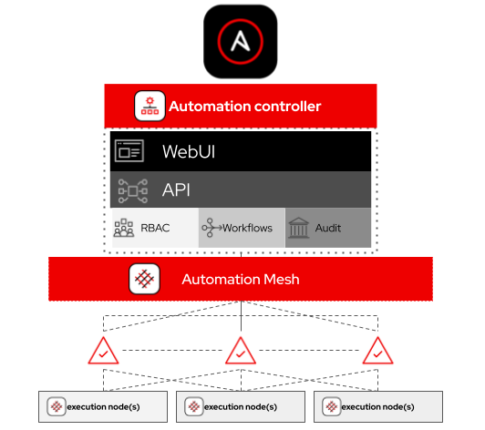
Automation mesh is an overlay network intended to ease the distribution of work across a large and dispersed collection of workers. Mesh nodes establish peer-to-peer connections with each other across your existing networks bringing automation closer to the endpoints that need it.
1 - AAP Introduction
Objective
The following exercise will provide an Ansible automation controller overview including going through features that are provided by the Red Hat Ansible Automation Platform. This will cover automation controller fundamentals such as:
- Job Templates
- Projects
- Inventories
- Credentials
- Workflows
Guide
Why Ansible automation controller?
Automation controller is a web-based UI that provides an enterprise solution for IT automation. It
- has a user-friendly dashboard.
- complements Ansible, adding automation, visual management, and monitoring capabilities.
- provides user access control to administrators.
- provides distinct view and edit perspectives for automation controller objects and components.
- graphically manages or synchronizes inventories with a wide variety of sources.
- has a RESTful API.
- And much more...
Your Ansible automation controller lab environment
In this lab you work in a pre-configured lab environment. You will have access to the following hosts:
| Role | Inventory name |
|---|---|
| Ansible control host & automation controller | ansible-1 |
| Managed Host 1 | node1 |
| Managed Host 2 | node2 |
| Managed Host 2 | node3 |
The Ansible automation controller provided in this lab is individually setup for you. Make sure to access the right machine whenever you work with it. Automation controller has already been installed and licensed for you, the web UI will be reachable over HTTP/HTTPS.
Dashboard
Let's have a first look at the automation controller: Point your browser to the URL you were given, similar to https://demo.redhat.com/workshop/pm6xgd (the current workshop ID will be different) and log in as admin. The password will be provided by the instructor.
The web UI of automation controller greets you with a dashboard with a graph showing:
- recent job activity
- the number of managed hosts
- quick pointers to lists of hosts with problems.
The dashboard also displays real time data about the execution of tasks completed in playbooks.
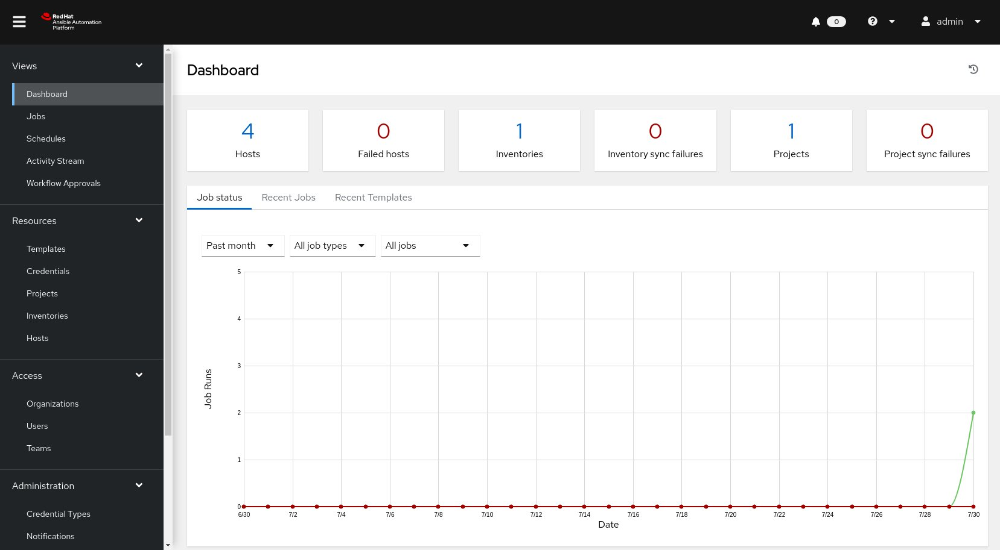
Concepts
Before we dive further into using Ansible automation controller, you should get familiar with some concepts and naming conventions.
Projects
Projects are logical collections of Ansible playbooks in Ansible automation controller. These playbooks either reside on the Ansible automation controller instance, or in a source code version control system supported by automation controller.
Inventories
An Inventory is a collection of hosts against which jobs may be launched, the same as an Ansible inventory file. Inventories are divided into groups and these groups contain the actual hosts. Groups may be populated manually, by entering host names into automation controller, from one of Ansible Automation controller’s supported cloud providers or through dynamic inventory scripts.
Credentials
Credentials are utilized by automation controller for authentication when launching Jobs against machines, synchronizing with inventory sources, and importing project content from a version control system. Credential configuration can be found in the Settings.
automation controller credentials are imported and stored encrypted in automation controller, and are not retrievable in plain text on the command line by any user. You can grant users and teams the ability to use these credentials, without actually exposing the credential to the user.
Templates
A job template is a definition and set of parameters for running an Ansible job. Job templates are useful to execute the same job many times. Job templates also encourage the reuse of Ansible playbook content and collaboration between teams. To execute a job, automation Controller requires that you first create a job template.
Jobs
A job is basically an instance of automation controller launching an Ansible playbook against an inventory of hosts.
2 - Inventory & Ad-hoc commands
Objective
Explore and understand the lab environment. This exercise will cover
-
Locating and understanding:
- Ansible Automation Controller Inventory
- Ansible Automation Controller Credentials
-
Running ad hoc commands via the Ansible Automation Controller web UI
Guide
Examine an Inventory
The first thing we need is an inventory of your managed hosts. This is the equivalent of an inventory file in Ansible Engine. There is a lot more to it (like dynamic inventories) but let’s start with the basics.
- You should already have the web UI open, if not: Point your browser to the URL you were given, similar to
https://demo.redhat.com/workshop/pm6xgd(the workshop ID will be different) and log in asadmin. The password will be provided by the instructor.
There will be one inventory, the Workshop Inventory. Click the Workshop Inventory then click the Hosts button
The inventory information at ~/lab_inventory/hosts was pre-loaded into the Ansible Automation controller Inventory as part of the provisioning process.
[web]
node1 ansible_host=node1.example.com
node2 ansible_host=node2.example.com
node3 ansible_host=node3.example.com
[control]
ansible-1 ansible_host=ansible-1.example.com
Warning
In your inventory the IP addresses will be different, do not copy the values above!
Examine Machine Credentials
Now we will examine the credentials to access our managed hosts from Automation controller. As part of the provisioning process for this Ansible Workshop the Workshop Credential has already been setup.
In the Resources menu choose Credentials. Now click on the Workshop Credential.
Note the following information:
| Parameter | Value | Description |
|---|---|---|
Machine |
Machine credentials define ssh and user-level privilege escalation access for playbooks. They are used when submitting jobs to run playbooks on a remote host. | |
ec2-user |
The user which matches our command-line Ansible inventory username for the other Linux nodes | |
Encrypted |
Note that you can't actually examine the SSH private key once someone hands it over to Ansible Automation controller |
Run Ad Hoc commands
It is possible to run run ad hoc commands from Ansible Automation controller as well.
Tip
Ensure that all hosts are available and can be included in automation jobs.
Got to Resources → Hosts and move the slider on the right to On for all hosts.
-
In the web UI go to Resources → Inventories → Workshop Inventory
-
Click the Hosts tab to change into the hosts view and select the three hosts node1 to node3 by ticking the boxes to the left of the host entries.
-
Click Run Command button. In the next screen you have to specify the ad hoc command.
Within the Details window, select Module ping and click Next.
Within the Execution Environment window, select Default execution environment and click Next.
Within the Machine Credential window, select Workshop Credentials and click Launch.
Tip
The output of the results is displayed once the command has completed.
The simple ping module doesn’t need options. For other modules you need to supply the command to run as an argument. Try the command module to find the userid of the executing user using an ad hoc command.
-
In the web UI go to Resources → Inventories → Workshop Inventory
-
Click the Hosts tab to change into the hosts view and select the three hosts by ticking the boxes to the left of the host entries.
-
Click Run Command button. In the next screen you have to specify the ad hoc command.
Within the Details window, select Module command, in Arguments type id and click Next.
Within the Execution Environment window, select Default execution environment and click Next.
Within the Machine Credential window, select Workshop Credentials and click Launch.
Tip
After choosing the module to run, Ansible Automation Controller will provide a link to the docs page for the module when clicking the question mark next to "Arguments". This is handy, give it a try.
How about trying to get some secret information from the system? Try to print out /etc/shadow.
-
In the web UI go to Resources → Inventories → Workshop Inventory
-
Click the Hosts tab to change into the hosts view and select the three hosts by ticking the boxes to the left of the host entries.
-
Click Run Command button. In the next screen you have to specify the ad hoc command.
Within the Details window, select Module command, in Arguments type cat /etc/shadow and click Next.
Within the Execution Environment window, select Default execution environment and click Next.
Within the Machine Credential window, select Workshop Credentials and click Launch.
Warning
Expect an error!
Oops, the last one didn’t went well, all red.
Re-run the last ad hoc command but this time check the checkbox labeled Enable privilege escalation.
As you see, this time it worked. For tasks that have to run as root you need to escalate the privileges. This is the same as the become: yes used in your Ansible Playbooks.
Challenge Lab: Ad Hoc Commands
Okay, a small challenge: Run an ad hoc to make sure the package "tmux" is installed on all hosts. If unsure, consult the documentation either via the web UI as shown above or by running ansible-doc yum on your Automation controller control host.
Solution
- In the Web UI go to Resources → Inventories → Workshop Inventory.
- Click the Hosts tab to change into the hosts view and select the three hosts by ticking the boxes to the left of the host entries.
- Click Run Command button. In the next screen you have to specify the ad hoc command.
- Within the Details window, select Module
yum, in Arguments typename=tmux, check Enable privilege escalation and click Next. - Within the Execution Environment window, select Default execution environment and click Next.
- Within the Machine Credential window, select Workshop Credentials and click Launch.
Info
Notice how the package was installed via the "CHANGED" output. If you run the ad hoc command a second time, the output will mention "SUCCESS" and inform you via the message parameter that there is nothing to do.
3 - Projects & Job Templates
Objective
An Ansible automation controller Project is a logical collection of Ansible playbooks. You can manage your playbooks by placing them into a source code management (SCM) system supported by automation controller such as Git or Subversion.
This exercise covers:
- Understanding and using an Ansible automation controller Project
- Using Ansible playbooks kept in a Git repository.
- Creating and using an Ansible Job Template
Guide
Setup Git Repository
For this demonstration we will use playbooks stored in a Git repository:
https://github.com/ansible/workshop-examples
A playbook to install the Apache web server has already been committed to the directory rhel/apache, apache_install.yml:
---
- name: Apache server installed
hosts: web
tasks:
- name: latest Apache version installed
yum:
name: httpd
state: latest
- name: latest firewalld version installed
yum:
name: firewalld
state: latest
- name: firewalld enabled and running
service:
name: firewalld
enabled: true
state: started
- name: firewalld permits http service
firewalld:
service: http
permanent: true
state: enabled
immediate: yes
- name: Apache enabled and running
service:
name: httpd
enabled: true
state: started
Tip
Note the difference to other playbooks you might have written! Most importantly there is no become and hosts is set to all.
To configure and use this repository as a Source Control Management (SCM) system in automation controller you have to create a Project that uses the repository
Create the Project
- Go to Resources → Projects click the Add button. Fill in the form:
| Parameter | Value |
|---|---|
| Name | Workshop Project |
| Organization | Default |
| Default Execution Environment | Default Execution Environment |
| Source Control Type | Git |
Enter the URL into the Project configuration:
| Parameter | Value |
|---|---|
| Source Control URL | https://github.com/ansible/workshop-examples.git |
| Options | Select Clean, Delete and Update Revision on Launch to request a fresh copy of the repository and to update the repository when launching a job. |
- Click SAVE
The new project will be synced automatically after creation. But you can also do this manually: Sync the Project again with the Git repository by going to the Projects view and clicking the circular arrow Sync Project icon to the right of the Project.
After starting the sync job, go to the Jobs view: there is a new job for the update of the Git repository.
Create a Job Template and Run a Job
A job template is a definition and set of parameters for running an Ansible job. Job templates are useful to execute the same job many times. So before running an Ansible Job from automation controller you must create a Job Template that pulls together:
-
Inventory: On what hosts should the job run?
-
Credentials What credentials are needed to log into the hosts?
-
Project: Where is the playbook?
-
What playbook to use?
Okay, let’s just do that: Go to the Resources -> Templates view, click the Add button and choose Add job template.
Tip
Remember that you can often click on magnifying glasses to get an overview of options to pick to fill in fields.
| Parameter | Value |
|---|---|
| Name | Install Apache |
| Job Type | Run |
| Inventory | Workshop Inventory |
| Project | Workshop Project |
| Execution Environment | Default execution environment |
| Playbook | rhel/apache/apache_install.yml |
| Credentials | Workshop Credential |
| Limit | web |
| Options | Privilege Escalation |
- Click Save
You can start the job by directly clicking the blue Launch button, or by clicking on the rocket in the Job Templates overview. After launching the Job Template, you are automatically brought to the job overview where you can follow the playbook execution in real time:
Job Details 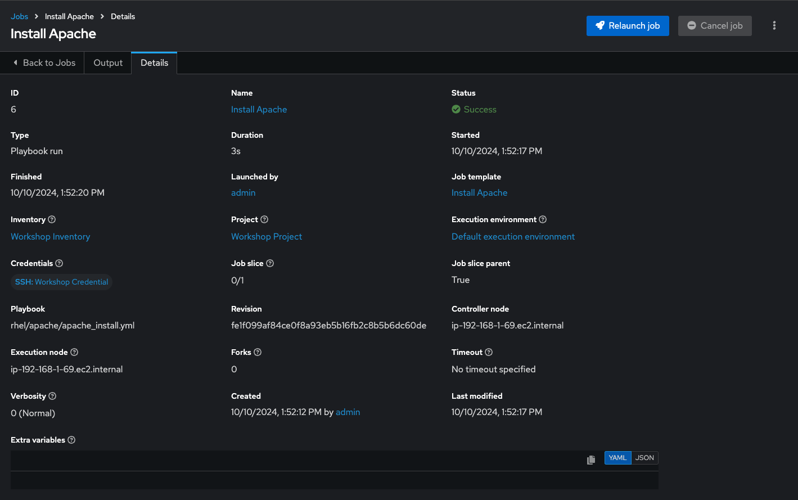
Job Run 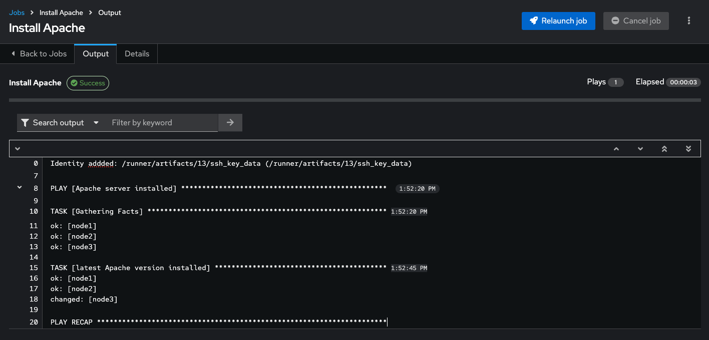
Since this might take some time, have a closer look at all the details provided:
-
All details of the job template like inventory, project, credentials and playbook are shown.
-
Additionally, the actual revision of the playbook is recorded here - this makes it easier to analyse job runs later on.
-
Also the time of execution with start and end time is recorded, giving you an idea of how long a job execution actually was.
-
Selecting Output shows the output of the running playbook. Click on a node underneath a task and see that detailed information are provided for each task of each node.
After the Job has finished go to the main Jobs view: All jobs are listed here, you should see directly before the Playbook run an Source Control Update was started. This is the Git update we configured for the Project on launch!
Challenge Lab: Check the Result
Time for a little challenge:
- Use an ad hoc command on all hosts to make sure Apache has been installed and is running.
You have already been through all the steps needed, so try this for yourself.
Tip
What about systemctl status httpd?
Solution
- Go to Resources → Inventories → Workshop Inventory
- In the Hosts view select
node1,node2,node3and click Run Command - Within the Details window, select Module
command, in Arguments typesystemctl status httpdand click Next. - Within the Execution Environment window, select Default execution environment and click Next.
- Within the Machine Credential window, select Workshop Credential and click Launch.
Info
The output of the results is displayed once the command has completed.
4 - Surveys
Objective
Demonstrate the use of Ansible Automation controller survey feature. Surveys set extra variables for the playbook similar to ‘Prompt for Extra Variables’ does, but in a user-friendly question and answer way. Surveys also allow for validation of user input.
Guide
You have installed Apache on all hosts in the job you just ran. Now we’re going to extend on this:
-
Use a proper role that has a Jinja2 template to deploy an
index.htmlfile. -
Create a job Template with a survey to collect the values for the
index.htmltemplate. -
Launch the job Template
Additionally, the role will make sure that the Apache configuration is properly set up for this exercise.
Tip
The survey feature only provides a simple query for data - it does not support four-eye principles, queries based on dynamic data or nested menus.
The Apache-configuration Role
The playbook and the role with the Jinja2 template already exist in the Github repository https://github.com/ansible/workshop-examples in the directory rhel/apache.
Head over to the Github UI and have a look at the content: the playbook apache_role_install.yml merely references the role. The role can be found in the roles/role_apache subdirectory.
- Inside the role, note the two variables in the
templates/index.html.j2template file marked by{{…}}. - Notice the tasks in
tasks/main.ymlthat deploy the file from the template.
What is this playbook doing? It creates a file (dest) on the managed hosts from the template (src).
The role deploys a static configuration for Apache. This is to make sure that all changes done in the previous chapters are overwritten and your examples work properly.
Because the playbook and role is located in the same Github repo as the apache_install.yml playbook you don't have to configure a new project for this exercise.
Create a Template with a Survey
Now you create a new Template that includes a survey.
Create Template
-
Go to Resources → Templates, click the Add button and choose Add job template
-
Fill out the following information:
| Parameter | Value |
|---|---|
| Name | Create index.html |
| Job Type | Run |
| Inventory | Workshop Inventory |
| Project | Workshop Project |
| Execution Environment | Default execution environment |
| Playbook | rhel/apache/apache_role_install.yml |
| Credentials | Workshop Credential |
| Limit | web |
| Options | Privilege Escalation |
- Click Save
Warning
Do not run the template yet!
Add the Survey
-
In the Template, click the Survey tab and click the Add button.
-
Fill out the following information:
| Parameter | Value |
|---|---|
| Question | First Line |
| Answer Variable Name | first_line |
| Answer Type | Text |
- Click Save
- Click the Add button
In the same fashion add a second Survey Question
| Parameter | Value |
|---|---|
| Question | Second Line |
| Answer Variable Name | second_line |
| Answer Type | Text |
- Click Save
- Click the toggle to turn the Survey questions to On
Launch the Template
Now launch Create index.html job template by selecting the Details tab and clicking the Launch button.
Before the actual launch the survey will ask for First Line and Second Line. Fill in some text and click Next. The Preview window shows the values, if all is good run the Job by clicking Launch.
After the job has completed, check the Apache homepage. In the SSH console on the control host, execute curl against node1:
[student1@ansible-1 ~]$ curl http://node1
<body>
<h1>Apache is running fine</h1>
<h1>This is survey field "First Line": line one</h1>
<h1>This is survey field "Second Line": line two</h1>
</body>
Note how the two variables where used by the playbook to create the content of the index.html file.
5 - Role-based access control
Objective
You have already learned how Ansible automation controller separates credentials from users. Another advantage of Ansible automation controller is the user and group rights management. This exercise demonstrates Role Based Access Control (RBAC)
Guide
Ansible automation controller users
There are three types of automation controller users:
-
Normal User: Have read and write access limited to the inventory and projects for which that user has been granted the appropriate roles and privileges.
-
System Auditor: Auditors implicitly inherit the read-only capability for all objects within the automation controller environment.
-
System Administrator: Has admin, read, and write privileges over the entire automation controller installation.
Let’s create a user:
-
In the automation controller menu under Access click Users
-
Click the Add button
-
Fill in the values for the new user:
| Parameter | Value |
|---|---|
| Username | wweb |
wweb@example.com |
|
| Password | ansible |
| Confirm Password | ansible |
| First Name | Werner |
| Last Name | Web |
| Organization | Default |
| User Type | Normal User |
- Click Save
Ansible automation controller teams
A Team is a subdivision of an organization with associated users, projects, credentials, and permissions. Teams provide a means to implement role-based access control schemes and delegate responsibilities across organizations. For instance, permissions may be granted to a whole Team rather than each user on the Team.
Create a Team:
-
In the menu go to Access → Teams
-
Click the Add button and create a team named
Web Contentwithin theDefaultOrganization. -
Click Save
Add a user to the team:
-
Click on the team
Web Contentand click the Access tab and click Add. -
Within the Select a Resource Type window, click on the Users resource type and click Next.
-
Within the Select Items from List, select the checkbox next to the
wwebuser and click Next. -
Within the Select Roles to Apply, select Member as the role to apply to the
wwebuser.
Click Save.
Permissions allow to read, modify, and administer projects, inventories, and other automation controller elements. Permissions can be set for different resources.
Granting permissions
To allow users or teams to actually do something, you have to set permissions. The user wweb should only be allowed to modify content of the assigned webserver.
Add the permission to use the Create index.html template:
-
Within Resources -> Templates, select
Create index.html. -
Select Access tab from the menu and click Add.
-
Within the Select a Resource Type window, click on the Users resource type and click Next.
-
Within the Select Items from List, select the checkbox next to the
wwebuser and click Next. -
Within the Select Roles to Apply, select Read and Execute as the roles to apply to the
wwebuser. -
Click Save
Test permissions
Now log out of automation controller’s web UI and in again as the wweb user.
-
Go to the Templates view, you should notice for wweb only the
Create index.htmltemplate is listed. He is allowed to view and launch, but not to edit the Template (no Edit button available). -
Run the Job Template by clicking the rocket icon. Enter the values for the survey questions and launch the job.
-
In the following Jobs view have a good look around, note that there where changes to the host (as expected).
Check the result: execute curl again on the control host to pull the content of the webserver on node1 (you could of course check node2 and node3, too):
Just recall what you have just done: You enabled a restricted user to run an Ansible playbook
-
Without having access to the credentials
-
Without being able to change the playbook itself
-
But with the ability to change variables you predefined!
Effectively you provided the power to execute automation to another user without handing out your credentials or giving the user the ability to change the automation code. And yet, at the same time the user can still modify things based on the surveys you created.
This capability is one of the main strengths of Ansible automation controller!
6 - Workflows
Objective
The basic idea of a workflow is to link multiple Job Templates together. They may or may not share inventory, playbooks or even permissions. The links can be conditional:
- if job template A succeeds, job template B is automatically executed afterwards
- but in case of failure, job template C will be run.
And the workflows are not even limited to Job Templates, but can also include project or inventory updates.
This enables new applications for Ansible automation controller: different Job Templates can build upon each other. E.g. the networking team creates playbooks with their own content, in their own Git repository and even targeting their own inventory, while the operations team also has their own repos, playbooks and inventory.
In this lab you’ll learn how to setup a workflow.
Guide
Lab scenario
You have two departments in your organization:
- The web operations team that is developing playbooks in their own Git branch named
webops - The web developers team that is developing playbooks in their own Git branch named
webdev.
When there is a new Node.js server to deploy, two things need to happen:
Web operations team
httpd,firewalld, andnode.jsneed to be installed,SELinuxsettings configured, the firewall needs to be opened, andhttpdandnode.jsshould get started.
Web developers team
- The most recent version of the web application needs to be deployed and
node.jsneeds to be restarted.
In other words, the Web operations team prepares a server for application deployment, and the Web developers team deploys the application on the server.
To make things somewhat easier for you, everything needed already exists in a Github repository: playbooks, JSP-files etc. You just need to glue it together.
Note
In this example we use two different branches of the same repository for the content of the separate teams. In reality, the structure of your Source Control repositories depends on a lot of factors and could be different.
Set up projects
First you have to set up the Git repo as a Project like you normally would.
Warning
If you are still logged in as user wweb, log out of and log in as user admin.
Within Resources -> Projects, click the Add button to create a project for the web operations team. Fill out the form as follows:
| Parameter | Value |
|---|---|
| Name | Webops Git Repo |
| Organization | Default |
| Default Execution Environment | Default Execution Environment |
| Source Control Credential Type | Git |
| Source Control URL | https://github.com/ansible/workshop-examples.git |
| Source Control Branch/Tag/Commit | webops |
| Options | Clean Delete Update Revision on Launch |
Click Save
Within Resources -> Projects, click the Add button to create a project for the web developers team. Fill out the form as follows:
| Parameter | Value |
|---|---|
| Name | Webdev Git Repo |
| Organization | Default |
| Default Execution Environment | Default Execution Environment |
| Source Control Credential Type | Git |
| Source Control URL | https://github.com/ansible/workshop-examples.git |
| Source Control Branch/Tag/Commit | webdev |
| Options | Clean Delete Update Revision on Launch |
Click Save
Set up job templates
Now you have to create two Job Templates like you would for "normal" Jobs.
Within Resources -> Templates, click the Add button and choose Add job template:
| Parameter | Value |
|---|---|
| Name | Web App Deploy |
| Job Type | Run |
| Inventory | Workshop Inventory |
| Project | Webops Git Repo |
| Execution Environment | Default execution environment |
| Playbook | rhel/webops/web_infrastructure.yml |
| Credentials | Workshop Credential |
| Limit | web |
| Options | Privilege Escalation |
Click Save
Within Resources -> Templates, click the Add button and choose Add job template:
| Parameter | Value |
|---|---|
| Name | Node.js Deploy |
| Job Type | Run |
| Inventory | Workshop Inventory |
| Project | Webdev Git Repo |
| Execution Environment | Default execution environment |
| Playbook | rhel/webdev/install_node_app.yml |
| Credentials | Workshop Credential |
| Limit | web |
| Options | Privilege Escalation |
Click Save
Tip
If you want to know what the Ansible Playbooks look like, check out the Github URL and switch to the appropriate branches.
Set up the workflow
Workflows are configured in the Templates view, you might have noticed you can choose between Add job template and Add workflow template when adding a template.
Within Resources -> Templates, click the Add button and choose Add workflow template:
| Parameter | Value |
|---|---|
| Name | Deploy Webapp Server |
| Organization | Default |
Click Save
After saving the template the Workflow Visualizer opens to allow you to build a workflow. You can later open the Workflow Visualizer again by using the button on the template details page and selecting Visualizer from the menu.
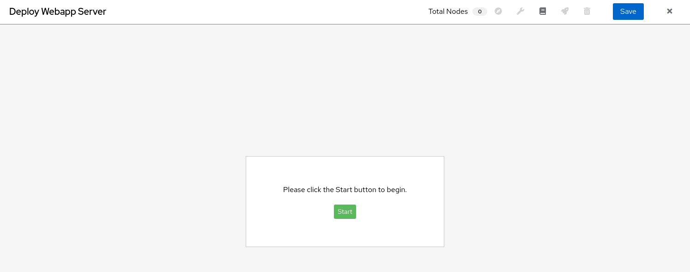
Click on the Start button, an Add Node window opens. Assign an action to the node, via node type by selecting Job Template.
Select the Web App Deploy job template and click Save.
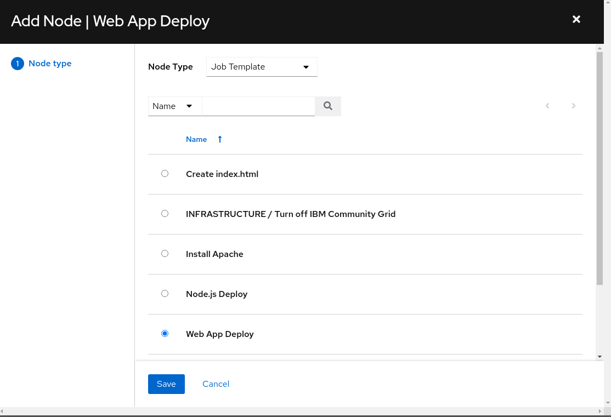
A new node is shown, connected to the START button with the name of the job template. Hover the mouse pointer over the node, you’ll see options to add a node (+), view node details (i), edit the node (pencil), link to an available node (chain), and delete the node (trash bin).
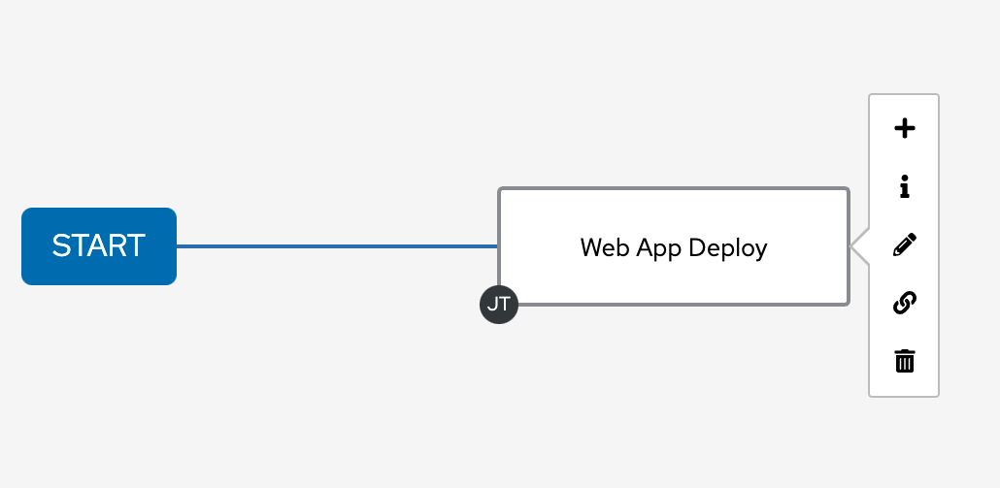
Hover over the node and click the (+) sign to add a new node.
- For the Run Type select On Success (default) and click Next.
Tip
The run type allows for more complex workflows. You could lay out different execution paths for successful and for failed playbook runs.
- For Node Type select Job Template (default) and choose the Node.js Deploy job template. Click Save.
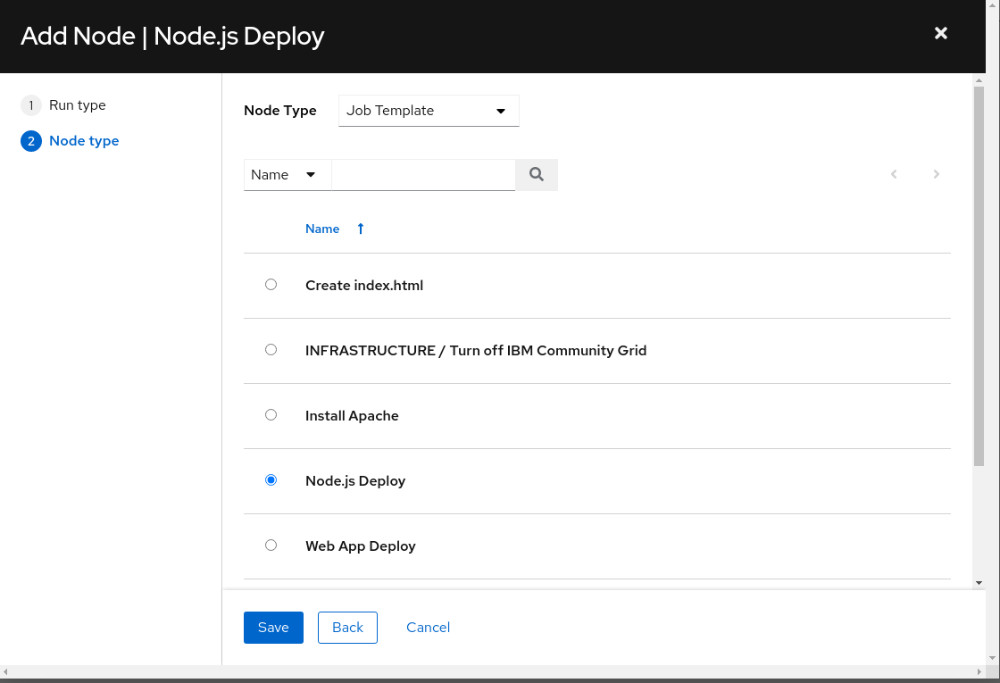
Click Save in the top right corner of the Visualizier view.
Tip
The Visualizer has options for setting up more advanced workflows, please refer to the documentation.
Launch workflow
From within the Deploy Webapp Server Details page, Launch the workflow.
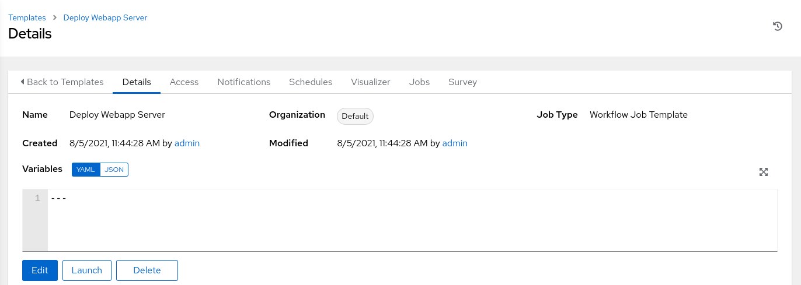
Note how the workflow run is shown in the Jobs > Deploy Webapp Server Output. In contrast to a normal job template job execution, there is no playbook output when the job completes but the time to complete the job is displayed. If you want to look at the actual playbook run, hover over the node you wish to see the details on and click it. Within the Details view of the job, select the Output menu to see the playbook output. If you want to get back the Output view of the Deploy WebappServer workflow, under Views -> Jobs -> XX - Deploy Webapp Server will take you back to the Output overview.
Note
XX is the number of the job run.
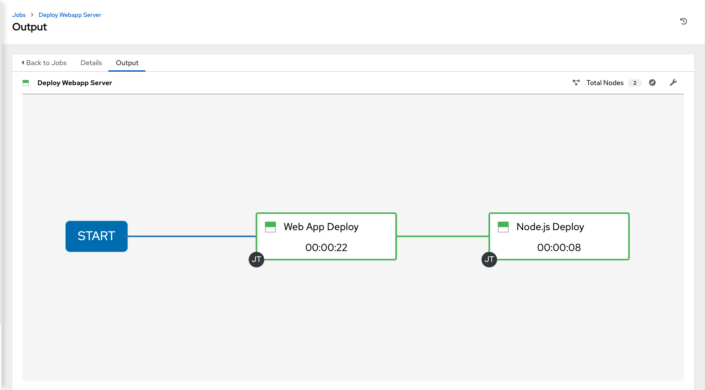
After the job was finished, check if everything worked fine: from your control host run the following curl command against node1, node2 and node3. The output of each curl command should be Hello World.
Note
X should be replaced with the appropriate number of the node you are checking.
7 - AAP Wrap up
Objective
This is the final challenge where we try to put most of what you have learned together.
Guide
Let’s set the stage
Your operations team and your application development team likes what they see in Ansible automation controller. To really use it in their environment they put together these requirements:
-
All webserver hosts (
node1,node2andnode3) should go in one group -
As the webserver hosts can be used for development purposes or in production, there has to be a way to flag them accordingly as "stage dev" or "stage prod".
- Currently
node1andnode3are used as a development system andnode2is in production.
- Currently
-
Of course the content of the world famous application "index.html" will be different between dev and prod stages.
- There should be a title on the page stating the environment
- There should be a content field
-
The content writer
wwebshould have access to a survey to change the content for dev and prod servers.
The Git Repository
All code is already in place - this is a automation controller lab after all. Check out the Workshop Project git repository at https://github.com/ansible/workshop-examples. There you will find the playbook webcontent.yml, which calls the role role_webcontent.
Compared to the previous Apache installation role there is a major difference: there are now multiple versions of an index.html template, and a task deploying the template file, which has a variable as part of the source file name.
For the development servers the file is named dev_index.html.j2 with the following content:
For the production servers the file is named prod_index.html.j2 with the following content:
The playbook main.yml deploys the template:
[...]
- name: Deploy index.html from template
template:
src: "{{ stage }}_index.html.j2"
dest: /var/www/html/index.html
notify: apache-restart
Prepare Inventory
There is of course more then one way to accomplish this, but for the purposes of this lab, we will use Ansible automation controller.
Within Resources -> Inventories and select 'Workshop Inventory'.
Within the Groups tab, click the Add button and create a new inventory group labeled Webserver and click Save.
Within the Details tab of the Webserver group, click on Edit. Within the Variables textbox define a variable labeled stage with the value dev and click Save.
Within the Details tab of the Webserver inventory, click the Hosts tab, click the Add button and Add existing host. Select node1, node2, node3 as the hosts to be part of the Webserver inventory.
Within Resources -> Inventories, select the Workshop Inventory. Click on the Hosts tab and click on node2. Click on Edit and add the stage: prod variable in the Variables window. This overrides the inventory variable due to order of operations of how the variables are accessed during playbook execution.
Within the Variables textbox define a variable labeled stage with the value of prod and click Save.
Tip
Make sure to keep the three dashes that mark the YAML start and the ansible_host line in place!
Create the Template
Within Resources -> Templates, select the Add button and Add job template as follows:
| Parameter | Value |
|---|---|
| Name | Create Web Content |
| Job Type | Run |
| Inventory | Workshop Inventory |
| Project | Workshop Project |
| Execution Environment | Default execution environment |
| Playbook | rhel/apache/webcontent.yml |
| Credentials | Workshop Credential |
| Limit | web |
| Variables | dev_content: "default dev content", prod_content: "default prod content" |
| Options | Privilege Escalation |
Click Save.
Run the template by clicking the Launch button.
Check the Results
This time we use the power of Ansible to check the results: execute uri to get the web content from each node, orchestrated by an Ansible playbook labeled check_url.yml
Tip
We are using the ansible_host variable in the URL to access every node in the inventory group.
---
- name: Check URL results
hosts: web
tasks:
- name: Check that you can connect (GET) to a page and it returns a status 200
uri:
url: "http://{{ ansible_host }}"
return_content: yes
register: uri_output
- debug:
msg: "{{ uri_output.content }}"
Execute the playbook:
Snippet of output:
TASK [debug] *******************************************************************
ok: [node1] => {
"uri_output.content": "<body>\n<h1>This is a development webserver, have fun!</h1>\ndev wweb</body>\n"
}
ok: [node2] => {
"uri_output.content": "<body>\n<h1>This is a production webserver, take care!</h1>\nprod wweb</body>\n"
}
ok: [node3] => {
"uri_output.content": "<body>\n<h1>This is a development webserver, have fun!</h1>\ndev wweb</body>\n"
}
Add Survey
- Add a Survey to the template to allow changing the variables
dev_contentandprod_content. - In the Template, click the Survey tab and click the Add button.
- Fill out the following information:
| Parameter | Value |
|---|---|
| Question | What should the value of dev_content be? |
| Answer Variable Name | dev_content |
| Answer Type | Text |
- Click Save
- Click the Add button
In the same fashion add a second Survey Question
| Parameter | Value |
|---|---|
| Question | What should the value of prod_content be? |
| Answer Variable Name | prod_content |
| Answer Type | Text |
- Click Save
-
Click the toggle to turn the Survey questions to On
-
Click Preview for the Survey
-
Add permissions to the team
Web Contentso the template Create Web Content can be executed bywweb. -
Within the Resources -> Templates, click Create Web Content and add Access to the user
wwebthe ability to execute the template.- Select a Resource Type -> click Users, click Next.
- Select Items from List -> select the checkbox
wweb, click Next. - Select Roles to Apply -> select the checkbox Execute and click Save.
-
Run the survey as user
wweb- Logout of the user
adminof your Ansible automation controller. - Login as
wweband go to Resources -> Templates and run the Create Web Content template.
- Logout of the user
Check the results again from your automation controller host. We will use the dedicated uri module within an Ansible playbook. As arguments it needs the actual URL and a flag to output the body in the results.
Solution
Warning
No solution this time 
You have done all the required configuration steps in the lab already. If unsure, just refer back to the respective chapters.
Ended: Automation Platform
Projects ↵
Overview
This section includes a couple of small projects which will further enhance your Ansible automation skills.
Depending on the length or the focus of the workshop, you will do one or more of these projects.
- Linux Automation - Grafana Deployment
- Network Automation - CISCO ACI Automation
- Cloud Automation - AWS
- DCIM Automation - Netbox
All of the projects are done in or with the Lab environment.
Project - Linux automation
To further enhance your Ansible skills, let's deploy the monitoring tool Grafana to one of the nodes in the demo environment.
Objective
Create an Ansible project from scratch and automate some basic linux configurations.
Guide
Step 1 - Prepare project
Create a new project folder in your home directory:
Create an inventory file with a grafana group definition. You will deploy Grafana to one of the nodes in the lab environment. Copy the node2 configuration from the default inventory file to your grafana group.
Step 2 - Install Grafana
The Grafana package comes from a dedicated repository, you'll need to enable it for the yum package manager on node2.
Use the following file and copy it to /etc/yum.repos.d/grafana.repo with an Ansible task:
[grafana]
name=grafana
baseurl=https://packages.grafana.com/oss/rpm
repo_gpgcheck=1
enabled=1
gpgcheck=1
gpgkey=https://packages.grafana.com/gpg.key
sslverify=1
sslcacert=/etc/pki/tls/certs/ca-bundle.crt
The next task should install the grafana package. Another task is needed to start (and enable) the grafana-server service.
Achieve the following tasks:
- Running Grafana instance on node2
- Grafana service running and enabled at startup
Ensure that Grafana is running with an ad hoc command:
[student@ansible-1 grafana-deployment]$ ansible grafana -a "systemctl status grafana-server"
node2 | CHANGED | rc=0 >>
● grafana-server.service - Grafana instance
Loaded: loaded (/usr/lib/systemd/system/grafana-server.service; enabled; vendor preset: disabled)
Active: active (running) since Sun 2022-04-17 10:00:35 UTC; 2min 44s ago
Docs: http://docs.grafana.org
Main PID: 20887 (grafana-server)
Tasks: 7 (limit: 4579)
Memory: 97.7M
CGroup: /system.slice/grafana-server.service
└─20887 /usr/sbin/grafana-server --config=/etc/grafana/grafana.ini --pidfile=/var/run/grafana/grafana-server.pid --packaging=rpm cfg:default.paths.logs=/var/log/grafana cfg:default.paths.data=/var/lib/grafana cfg:default.paths.plugins=/var/lib/grafana/plugins cfg:default.paths.provisioning=/etc/grafana/provisioning
Accessing the Grafana UI from the browser currently fails with a timeout, use the public IP address of your node2 (the one from your inventory) and port 3000 (this is the default port for Grafana). We will fix this in the next step.
Step 3 - Configure Grafana
Currently, you are not able to access the Grafana UI, using the public IP address of your node2 and the Grafana default port of 3000, you will get a timeout.
The lab environment only allows access to Port 80 and 8080, yesterday you started an Apache webserver on these ports with Ansible. You'll have to configure Grafana to start on Port 8080 to able to access the UI.
Warning
There should be no running Apache webserver on node2, if otherwise, you'll need to stop httpd on node2! If the port is occupied, Grafana can not be started!
You could (and should!) ensure a stopped Apache easily with an Ansible task...
By default, Grafana uses a black background. You will adjust the Grafana configuration with Ansible to show the Grafana UI with white background. You will change the look from this...
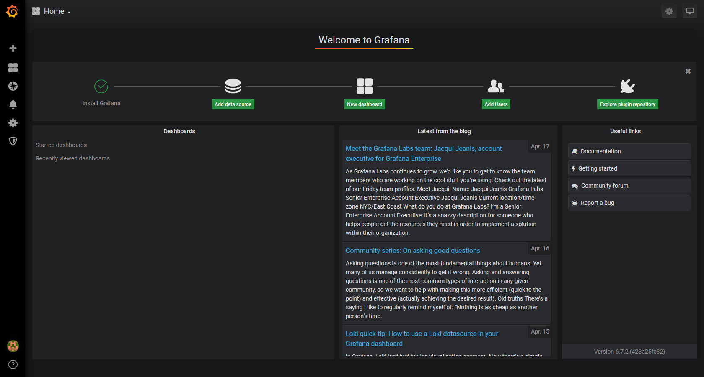
...to this...
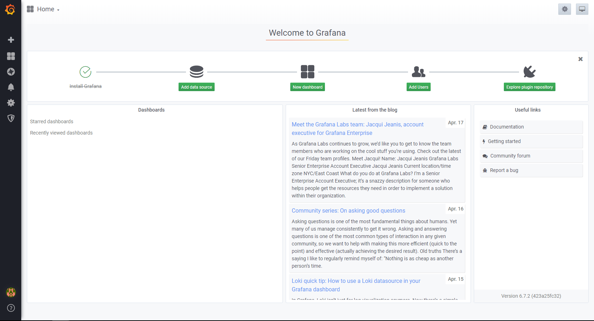
The configuration for Grafana is stored in /etc/grafana/grafana.ini. You need to adjust the theme configuration in the users section, as well as the http_port in the server section. Take a look at the Grafana documentation on how to change the parameters.
Naturally, you should achieve this with Ansible! Find an appropriate module (there is more than one way to achieve the solution...) and adjust the Grafana configuration file.
Tip
Configuration changes require a service restart!
Now that we adjusted the configuration, try to access the Grafana UI again. Use the public IP address of your node2 and use Port 8080 this time.
Success
It works! The default login credentials are admin:admin, you can skip the password change request.
Achieve the following tasks:
- Accessible Grafana UI on port 8080
- Grafana UI in
lighttheme - Bonus: Can you manage to control the look of Grafana by just switching a variable?
Step 4 - Re-format project to role structure
All Ansible projects should use the role structure, if your project does not already uses it, now is the time to rearrange your content. Create a roles folder and an appropriately named sub-folder for the grafana deployment with all necessary folder and files.
Change your playbook to use your role, e.g.:
---
# This is the main Playbook for the 'Grafana Deployment' Project
- name: Deploy Grafana instance
hosts: grafana
roles:
- grafana
Make sure everything works by executing your playbook again, you should not see any changes, all tasks should return a green "Ok" status.
Achieve the following tasks:
- Project uses Ansible role structure
- Playbook references role
Step 5 - Bonus: Upload project to Github
Create a new project in your personal Github account and commit your Ansible project.
Step 6 - Bonus: Run your project within AAP
Create a new project in AAP, reference your Grafana project from Github as the code source. Create a template and run your playbook.
Project - Network automation
Although the (historical) focus of Ansible was Linux automation, it is very strong with automating network as well.
Ansible collections support a wide range of vendors, device types, and actions, so you can manage your entire network with a single automation tool. With Ansible, you can:
- Automate repetitive tasks to speed routine network changes and free up your time for more strategic work
- Leverage the same simple, powerful, and agent-less automation tool for network tasks that operations and development use
- Separate the data model (in a playbook or role) from the execution layer (via Ansible modules) to manage heterogeneous network devices
- Benefit from community and vendor-generated sample playbooks and roles to help accelerate network automation projects
- Communicate securely with network hardware over SSH or HTTPS
Objective
Get to know network automation with Ansible.
Network automation uses the basic Ansible concepts, but there are some differences in how the network modules work.
Unlike most Ansible modules, network modules do not run on the managed nodes. From a user’s point of view, network modules work like any other modules. They work with ad hoc commands, playbooks, and roles. Behind the scenes, however, network modules use a different methodology than the other (Linux/Unix and Windows) modules use. Ansible is written and executed in Python. Because the majority of network devices can not run Python, the Ansible network modules are executed on the Ansible control node.
Guide
You will execute some automation tasks against Cisco ACI. The Cisco Application Centric Infrastructure allows application requirements to define the network. This architecture simplifies, optimizes, and accelerates the entire application deployment life cycle.
The Application Policy Infrastructure Controller manages the scalable ACI multi-tenant fabric. The APIC provides a unified point of automation and management, policy programming, application deployment, and health monitoring for the fabric. The APIC, which is implemented as a replicated synchronized clustered controller, optimizes performance, supports any application anywhere, and provides unified operation of the physical and virtual infrastructure.
The APIC enables network administrators to easily define the optimal network for applications. Data center operators can clearly see how applications consume network resources, easily isolate and troubleshoot application and infrastructure problems, and monitor and profile resource usage patterns.
The Cisco Application Policy Infrastructure Controller API enables applications to directly connect with a secure, shared, high-performance resource pool that includes network, compute, and storage capabilities.
Step 1 - Prepare project
Create a new project folder in your home directory:
We will be using a Cisco ACI Sandbox available online.
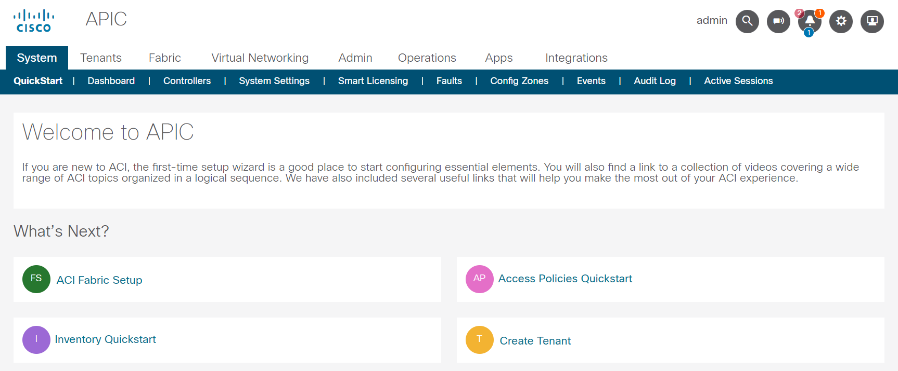
Open a new browser tab and go to https://sandboxapicdc.cisco.com/#
Tip
The credentials for accessing the Cisco Sandbox are shown below, you can copy the content by using the symbol on the right of the code block.
Username:
Password:
Today, you might need additional Ansible modules. In the first part of the workshop, we only used a handful of modules which are all included in the ansible-core binary. With ansible-core only 69 of the most used modules are included:
[student@ansible-1 ~]$ ansible-doc -l
add_host Add a host (and alternatively a group) to the ansible-playbook in-memory inventory
apt Manages apt-packages
apt_key Add or remove an apt key
apt_repository Add and remove APT repositories
assemble Assemble configuration files from fragments
assert Asserts given expressions are true
async_status Obtain status of asynchronous task
blockinfile Insert/update/remove a text block surrounded by marker lines
command Execute commands on targets
copy Copy files to remote locations
...
Additional modules are installed through collections, search the Collection Index in the Ansible documentation for a module or use the search field.
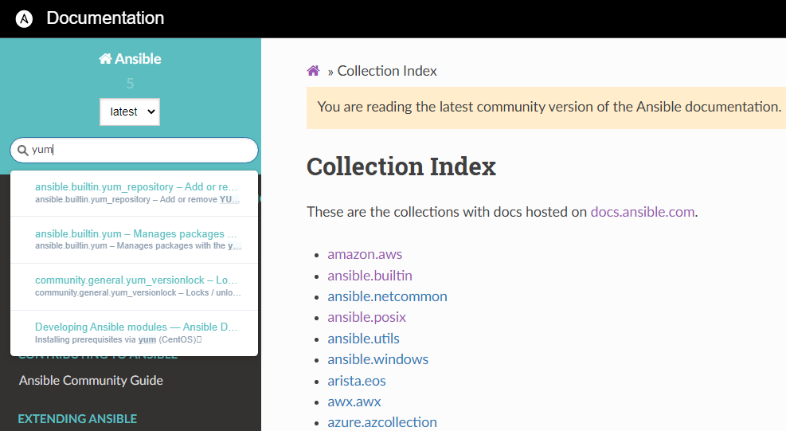
If, for example, you want to create an EC2 instance in AWS, you will need the module amazon.aws.ec2_instance. To get the module, you'll need the collection aws of the provider amazon. Download the collection with the ansible-galaxy utility:
[student@ansible-1 ~]$ ansible-galaxy collection install amazon.aws
Starting galaxy collection install process
Process install dependency map
Starting collection install process
Downloading https://galaxy.ansible.com/download/amazon-aws-3.2.0.tar.gz to /home/student/.ansible/tmp/ansible-local-55382m3kkt4we/tmp7b2kxag4/amazon-aws-3.2.0-3itpmahr
Installing 'amazon.aws:3.2.0' to '/home/student/.ansible/collections/ansible_collections/amazon/aws'
amazon.aws:3.2.0 was installed successfully
Tip
Well, you won't need the AWS collection, but automating the ACI with Ansible also requires additional modules, these are not included in the ansible-core binary and need to be installed with Ansible Galaxy.
Achieve the following tasks:
- Find appropriate collection for Cisco ACI automation in the documentation
- Collection installed
You can view the installed collections with this command:
[student@ansible-1 aci-automation]$ ansible-galaxy collection list
# /home/student/.ansible/collections/ansible_collections
Collection Version
----------------- -------
ansible.posix 1.4.0
community.docker 2.7.0
community.general 5.3.0
Note
If you use the Ansible navigator (which utilizes an execution environment), the collection is available. The method for playbook execution is up to you, why not try it with both ways?!
Step 2 - Inventory and playbook
Within your newly created project folder, create an inventory file and a playbook file.
Tip
You have to instruct Ansible to communicate with the APIC API, per default Ansible would try to communicate via SSH. This will not work.
Use the same credentials for API communication as for the login to the APIC UI.
The API endpoint (host) for the ACI modules can use the URL of the sandbox, you won't need the prefix https://. An overview of all available ACI modules can be found in the Ansible documentation. The documentation also provides an extensive Guide for ACI automation.
Testing the successful communication with the API could be done by querying ACI system information with the aci_system module. Create your playbook and add a task, utilizing this module. Fill all necessary parameter.
Run your playbook, if it returns a green ok status, communication is established.
For now, the gathered system information about the ACI system is not relevant for us, still, you could store the output in a variable and output it with an appropriate module, if you are curious.
Achieve the following tasks:
- Inventory and playbook created
- Use variables where possible (and useful)
- Successful communication with APIC established
You may encounter the following error messages:
Failure
Expect an error message complaining about certification verification:
If you see an error message like above, you can disable certificate validation for your task:
For a production environment this is obviously not recommended!
Failure
If you see one of the following error messages, ensure that the Sandbox is available:
Connection failed for https://sandboxapicdc.cisco.com/api/aaaLogin.json. Connection failure: The read operation timed out
Authentication failed: -1 Unable to parse output as JSON, see 'raw' output. Expecting value: line 1 column 1 (char 0)", "raw": "<html>\r\n<head><title>502 Bad Gateway</title></head>\r\n<body bgcolor=\"white\">\r\n<center><h1>502 Bad Gateway</h1></center>\r\n<hr><center>nginx/1.13.12</center>\r\n</body>\r\n</html>\r\n
Try to reload the APIC browser tab.
In case of an unavailable APIC sandbox, re-run your playbook when it comes back online.
Step 3 - Create a new tenant
The APIC manages the scalable ACI multi-tenant fabric. A multi-tenant environment or multi-tenancy data centres handle segregation of traffic between multiple tenants and ensure privacy and security between tenant data.
The goal is to create a new tenant within the APIC controller with Ansible. The tenant should have a recognizable name e.g. demo-tenant-<initials>. Add the tenant description Workshop tenant.
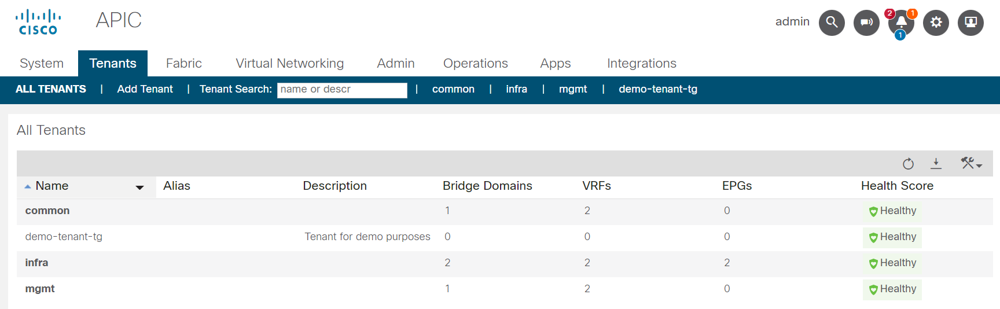
Observe the tenant and it's annotation in the APIC UI.
Achieve the following tasks:
- Tenant created
- Inspected tenant in the UI
Step 4 - AP creation and EPGs
Now, that we have our own custom tenant, lets fill it with content. Create an Application profile and add multiple end point groups. Application profiles are container for the grouping of endpoint groups. For example, an AP could group a web server with the backend database, with storage, and so on.
Create an Application profile with the following attributes:
| Parameter | Value |
|---|---|
| AP name | workshop |
| AP description | Workshop AP |
| Monitoring Policy | default |
Ensure that your AP is created for your own tenant!
Let's create three EPGs for our Application profile, use a single task by creating them in a loop. The EPGs should have the following attributes:
| Loop item | EPG name | EPG description |
|---|---|---|
| 1 | web |
Web EPG |
| 2 | app |
APP EPG |
| 3 | db |
DB EPG |
Setting the required attributes requires looping over a list of hashes. All EPGs should have the default monitoring policy attached.
Observe the tenant in the APIC UI.
Achieve the following tasks:
- Application profile created
- EPGs created
Note
No communication between the different EPGs is established yet, this would be achieved with contracts. By now, you are experienced enough with creating objects in ACI with Ansible, let's skip the contracts creation.
Step 5 - Roles and encryption
Now that you can execute automated tasks against the ACI, let's re-format the project and use some Ansible best-practices.
All Ansible projects should use the role structure, if your project does not already uses it, now is the time to rearrange your content. Create a roles folder and an appropriately named sub-folder for the tenant creation with all necessary folder and files.
Your tasks using the Ansible ACI module(s) require username and password, at least the password should be encrypted. Ansible Vault encrypts variables and files so you can protect sensitive content rather than leaving it visible as plaintext in playbooks or roles, take a look at the Ansible Vault documentation for further information. Encrypt the APIC credentials and re-run your playbook.
Tip
Remember the necessary additional cli parameter when executing a playbook which references encrypted content.
Achieve the following tasks:
- Project uses Ansible role structure
- APIC credentials are vault-encrypted
- Playbook references role, tasks are executed
Step 6 - Use filters to manipulate data
Filters let you transform JSON data into YAML data, split a URL to extract the hostname, get the SHA1 hash of a string, add or multiply integers, and much more. You can use the Ansible-specific filters documented here to manipulate your data, or use any of the standard filters shipped with Jinja2.
Create a new role which utilizes an Ansible ACI module that can manage contract resources (vz:BrCP). Get all contracts of the common tenant and output a list with only the contract names.
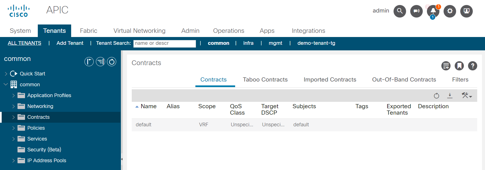
The common tenant has at least one contract (default).
Dealing with network devices often means dealing with large JSON objects and you have to filter the output to your needs. Browse the Ansible filter documentation for a suitable filter.
The Ansible module you will be using returns a JSON output like the following:
1 2 3 4 5 6 7 8 9 10 11 12 13 14 15 16 17 18 19 20 21 22 23 24 25 26 27 28 29 30 31 32 33 34 35 36 37 38 39 40 41 42 43 44 45 46 47 48 49 50 51 52 53 54 55 56 57 58 59 60 61 62 63 64 65 66 67 68 69 70 71 72 73 74 75 76 77 78 79 80 81 82 83 84 85 86 87 88 89 90 91 92 93 94 95 96 97 98 99 100 101 102 103 104 105 106 107 108 109 110 111 112 113 114 115 116 117 | |
The highlighted lines show the list of contracts and the name of the contract-element. You need to traverse the JSON object until you reach the key you want to get. In JSON, list-objects are encapsulated with square brackets (start with [ and end with ]), dictionary objects with curly brackets (start with { and end with }).
Observing the above output, you can see that multiple list objects are within the complete JSON object. The value of the key current is a list, every list item of this key is a tenant (with multiple key-value pairs which can also be dictionaries or lists).
If you filter for a single tenant (by providing the tenant name) when using the module, the list current only has one element. Lists (in Python, which Ansible is based on) start at element 0, the second list element is 1 and so on.
The resulting output in your playbook-run should look something like this (considering that the common tenant only has one contract):
TASK [aci-contract : Output list of contract names of Tenant 'common'] ********
ok: [demo-aci-host] => {
"msg": [
"default"
]
}
Tip
There are multiple ways to achieve the desired solution, try around!
Dealing with large JSON objects and outputting it to stdout may result in not being able to scroll back far enough to see the start of your task or playbook.
You can adjust the VScode configuration yourself.
Achieve the following tasks:
- New role for contract handling created
- Playbook runs both roles
- Playbook outputs list of all contracts for common tenant
If you struggle to find a solution, here are some hints. (Try without them first!)
The following tips may help you to develop a solution:
- Use the
cisco.aci.aci_contractmodule. - Define the tenant
commonin the module, otherwise you will get all contracts of all users, which is harder to parse. - Use
state: queryfor listing all contract objects. - Store the module output in a variable (register).
- Use the
json_queryfilter. The filter is part of thecommunity.generalcollection. - You need to install a Python package for the filter, run
pip3.9 install jmespath(if your Ansible uses Python3.9, runansible --versionto find out) - Traversing the JSON object can be achieved by
current[0].fvTenant.children... - Output to stdout can be achieved with the debug module.
Project - AWS Automation
Automating Cloud infrastructure is getting more and more important. Tools like Terraform are well suited for provisioning infrastructure in public cloud environments.
When dealing with immutable infrastructure, Terraform works well and is great at provisioning cloud resources and applications for AWS, Azure, Docker, GCP, and others. However, there is more to IT operations than automated infrastructure provisioning and this is why Ansible is extremely popular as well.
Terraform is an excellent cloud provisioning and de-provisioning tool for infrastructure as code. Ansible is a great all-purpose, cross-domain automation solution.
Together, they perform in harmony to create a better experience for developers and operations teams. Still, this workshops focus is Ansible, let us do provisioning and configuration in the cloud with the tool we learned.
Objective
Get to know cloud automation with Ansible.
Cloud automation uses the basic Ansible concepts, but there are some differences in how the modules work.
From a user’s point of view, cloud modules work like any other modules. They work with ad hoc commands, playbooks, and roles.
Behind the scenes, however, cloud modules use a different methodology than the other (Linux/Unix and Windows) modules use. As we are communicating with an API endpoint, but Ansible and most of its modules are written and executed in Python, you need to use the Python interpreter on the Ansible control node.
Requirements
For doing the following exercises, you will need an AWS Account and an AWS Access key (consists of an Access Key ID and a Secret Access Key).
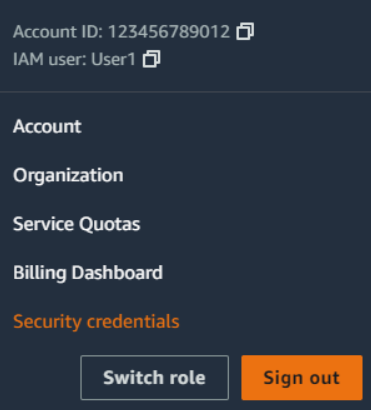
After creating your AWS Account, go to the navigation bar on the upper right, choose your user name, and then choose Security credentials.
In the Access keys section, choose Create access key. On the Access key best practices & alternatives page, choose your use case to learn about additional options which can help you avoid creating a long-term access key. Mark the checkbox and click Create Access Key. On the Retrieve access keys page, choose either Show to reveal the value of your user's secret access key, or Download .csv file. This is your only opportunity to save your secret access key. After you've saved your secret access key in a secure location, choose Done.
Tip
Most modules need the region set, use the region eu-central-1 throughout your playbook.
Guide
The following steps explain and train you how to use the modules and inventory scripts to automate your AWS resources with Ansible.
Step 1 - Prepare controller
Today, you will need additional Ansible modules. In the first part of the workshop, we only used a handful of modules which are all included in the ansible-core binary. With ansible-core only 69 of the most used modules are included:
[student@ansible-1 ~]$ ansible-doc -l
add_host Add a host (and alternatively a group) to the ansible-playbook in-memory inventory
apt Manages apt-packages
apt_key Add or remove an apt key
apt_repository Add and remove APT repositories
assemble Assemble configuration files from fragments
assert Asserts given expressions are true
async_status Obtain status of asynchronous task
blockinfile Insert/update/remove a text block surrounded by marker lines
command Execute commands on targets
copy Copy files to remote locations
...
Additional modules are installed through collections, search the Collection Index in the Ansible documentation for a suitable collection or use the search field.
Once you found the appropriate collection, install it with the ansible-galaxy CLI command:
Requirements for the AWS modules are minimal, you will need an additional Python package. Install the package with this command:
Note
Note the version of the Python package manager utility (pip3.9)!
Your Ansible control node might have multiple Python versions installed, install necessary dependencies for the Python version that Ansible uses.
You can check for the Python interpreter of Ansible with the ansible --version command:
[student@ansible-1 ~]$ ansible --version
ansible [core 2.14.0]
config file = /etc/ansible/ansible.cfg
configured module search path = ['/home/student/.ansible/plugins/modules', '/usr/share/ansible/plugins/modules']
ansible python module location = /usr/lib/python3.9/site-packages/ansible
ansible collection location = /home/student/.ansible/collections:/usr/share/ansible/collections
executable location = /usr/bin/ansible*
python version = 3.9.13 (main, Nov 9 2022, 13:16:24) [GCC 8.5.0 20210514 (Red Hat 8.5.0-15)] (/usr/bin/python3.9)
jinja version = 3.1.2
libyaml = True
--user, this installs the dependencies to ~/.local/lib.
Achieve the following tasks:
- Find appropriate collection for AWS automation in the documentation
- Collection installed
- Python requirements installed
You can view the installed collections with this command:
[student@ansible-1 aci-automation]$ ansible-galaxy collection list
# /home/student/.ansible/collections/ansible_collections
Collection Version
----------------- -------
ansible.posix 1.4.0
community.docker 2.7.0
community.general 5.3.0
Step 2 - Prepare project
Create a new project folder in your home directory:
Within your newly created project folder, create a playbook file.
Tip
You have to instruct Ansible to communicate with the AWS API, per default Ansible would try to communicate via SSH. This will not work. Set the target of your playbook to your local machine.
The documentation provides an extensive Guide for AWS automation which can help you setting up everything. For successful communication with the AWS API, you need to authenticate yourself, this is where your previously created Access key is needed.
You can either specify your credentials as module arguments (you'll need to repeat them with every module) or as environment variables. The first variant would require you to set the credentials in variables (which need to be encrypted, this can be achieved with ansible-vault). Let's use the method with environment variables, this eases the first steps and is also applicable if you would run your playbook in the Ansible Automation Platform.
Set the environment variables on the CLI:
Environment variables are only set in the current session, if you close your terminal, you'll need to set them again. To remember this, you could include this optional task as the first in your playbook which asserts that the variables are set. If the variables are missing, it will fail the playbook with a hint on what to do:
- name: Ensure AWS credentials are set
ansible.builtin.assert:
that:
- ansible_env.AWS_ACCESS_KEY_ID is defined
- ansible_env.AWS_SECRET_ACCESS_KEY is defined
quiet: true
fail_msg: |
No environment variables with AWS credentials found!
Set the variables with:
export AWS_ACCESS_KEY_ID='AK123'
export AWS_SECRET_ACCESS_KEY='abc123'
Danger
Your bash history reveals the CLI input and your credentials!
You can delete the respective entry with history -d <position>.
Alternative solution
You can set your credentials in a hidden file ~/.aws/credentials in your home directory in an ini file:
[workshop]
aws_access_key_id = YOUR_AWS_ACCESS_KEY_ID
aws_secret_access_key = YOUR_AWS_SECRET_ACCESS_KEY
The section represents a credential profile which needs to be added to every module with the key-value-pair aws_profile: profile_name, in our example with aws_profile: workshop.
Note, this solution also does not store the credentials in an encrypted way! Everybody with access to your home directory would be able to read your credentials!
In production, its best to use an external credential provider. In the Ansible Automation platform you can store your variables in an encrypted database or use multiple credential provider plugins.
Testing the successful communication with the API could be done by querying information about an EC2 AMI Image. Find an appropriate module, create your playbook and add a task. Try to gather information about the following AMI, you can copy the content with a button:
The AMI is available in the eu-central-1 region, you may to define this in the module you've chosen.
Run your playbook, if it returns a green ok status, communication is established. For now, the gathered information about the AMI is not relevant for us, still, you could store the output in a variable and output it with an appropriate module, if you are curious.
Achieve the following tasks:
- Playbook created
- Successful communication with AWS established
Step 3 - Create SSH key-pair
In a later step, we will create EC2 instances. To be able to login to these hosts, we need a SSH key-pair. Let's create a dedicated key, this can be achieved with the module openssh_keypair.
The module is not part of the ansible.builtin collection, try to find the collection where the module is stored (Tip: Use the search field in the documentation). When you found the correct collection, install it with the ansible-galaxy collection install command.
Add a task to your playbook which creates a key-pair in the default folder in your home directory (~/.ssh). The key should be called workshop, the module will create a private key with this name and a public key with the name workshop.pub. The home directory of the user running the playbook is stored in the fact ansible_env.HOME, use this as a variable and append /.ssh/workshop.
Success
Use a key size of 2048 bits!
Now, lets create the EC2 key-pair named workshop in AWS with our playbook.
Find the correct module and provide the public key created by the previous task.
You can access the content of the public key with a lookup plugin:
Achieve the following tasks:
- Collection with module
openssh_keypairfound and installed - Added task to create key pair with 2048 bits
- Added task to create new AWS EC2 keypair using public key of previously created local keypair
Step 4 - Get default VPC
A AWS Virtual Private Cloud should already be configured for you, lets use this for our workshop. We need to get the ID of the default VPC net, this can be achieved with Ansible as well.
Find the correct module to gather information about EC2 VPCs and add it to your playbook. Add the following parameters:
Store the output of the module in a variable, e.g. vpc_info. Afterwards, add the following task which sets a fact/variable with the ID of your default VPC:
- name: Set variable with ID of default VPC
set_fact:
default_vpc_id: "{{ vpc_info.vpcs.0.vpc_id }}"
The variable vpc_info contains a list vpcs. As we filtered for the default VPC, the list only contains one element, therefore we can access the list item with 0. The list item contains a key vpc_id, the value is what we are looking for.
Achieve the following tasks:
- Module for gathering VPC info identified and used
- set_fact Task returns green "ok" status
If you are curious, add another task which debugs the variable to stdout.
Step 5 - Create Security group
We need to create a security group and add a rule for incoming SSH access to be able to login to our EC2 instance later. Find the correct module and add a task, provide the following parameter:
| Parameter | Value | Description |
|---|---|---|
| name | workshop-sg | The name of the Security group |
| description | Security group created by Ansible | Short description |
| vpc_id | "{{ default_vpc_id }}" | The value of your variable default_vpc_id |
| region | eu-central-1 | The region we used in all other tasks |
The rules parameter must hold a list, in our case a single rule is enough. Find the correct rule parameters and use the following values:
- Protocol: TCP
- From: 22
- To: 22
- CIDR: 0.0.0.0/0
Run your playbook.
Achieve the following tasks:
- Module for maintaining security groups identified and used
- Security group successfully created
Step 6 - Create EC2 instance
Now it's finally time to create a virtual machine in AWS.
Find the appropriate module and add a task to your playbook, your instance should have the following configuration (this time it is up to you to find the correct key-value-pairs):
- Must be called
workshop-instance1 - Must be created in
eu-central-1 - Must have a public IP address
- Must have the
workshopkey assigned - Must have the size
t2.micro - Must be in the security group
workshop-sg - Must use the AMI
ami-06c39ed6b42908a36 - Should have the tag
Environment: Testingattached
Choose the right value for the state parameter, your playbook should wait for a running instance!
Achieve the following task:
- Running EC2 instance
Step 7 - Get DNS name and login
Find a module to gather information about your EC2 instances in your region, use the filter "tag:Name": workshop-instance1 to only get this single instance.
Store the output of the module into a variable and use the variable in another task which debugs only the public DNS name of your previously created EC2 instance.
TASK [Output public DNS name of workshop-instance1] ****************************************************************************************************************
ok: [localhost] =>
msg: ec2-3-70-238-39.eu-central-1.compute.amazonaws.com
Copy the output of your task and login to your EC2 instance with SSH. Provide the private key and use the user ec2-user, for example:
[student@ansible-1 ~]$ ssh -i ~/.ssh/workshop ec2-user@ec2-3-70-238-39.eu-central-1.compute.amazonaws.com
Last login: Sat Feb 11 13:27:56 2023 from ec2-3-71-15-149.eu-central-1.compute.amazonaws.com
__| __|_ )
_| ( / Amazon Linux 2 AMI
___|\___|___|
https://aws.amazon.com/amazon-linux-2/
16 package(s) needed for security, out of 16 available
Run "sudo yum update" to apply all updates.
Achieve the following tasks:
- Added task to gather information about EC2 instances
- Added task to output public DNS name of instance
- Successful SSH login to EC2 instance
Success
Awesome, you created a virtual machine in the Cloud and are able to login!
Optional
Step 1 - Create multiple EC2 instances
In Step 5 you created a single EC2 instance, adjust your task to create multiple instances in a loop. The name of every instance must differ, as well as the Environment tag.
Create three instances with the single task, with the instance being in the given Environment :
| Name | Environment (Tag) |
|---|---|
| workshop-instance1 | Testing |
| workshop-instance2 | Testing |
| workshop-instance3 | Production |
Run your playbook, you should see two more instances being created.
Achieve the following task:
- Adjusted task to create three EC2 instances
workshop-instance[1-3]
Step 2 - Create dynamic inventory
When using Ansible with AWS, inventory file maintenance will be a hectic task as AWS frequently changes IPs, autoscaling instances, and more. Once your AWS EC2 hosts are spun up, you’ll probably want to talk to them again. With a cloud setup, it’s best not to maintain a static list of cloud hostnames in text files. Rather, the best way to handle this is to use the aws_ec2 dynamic inventory plugin.
Create a file workshop.aws_ec2.yml
The inventory should have two additional groups test_stage and prod_stage. The hosts have a tag Environment with either Testing or Production, ensure that they are part of the correct group.
You can test your inventory with the ansible-inventory CLI utility, it outputs a JSON representation of how Ansible sees your provided inventory.
[student@ansible-1 aws-automation]$ ansible-inventory -i demo.aws_ec2.yml --list
{
"_meta": {
[..Cut for better readability..]
}
"all": {
"children": [
"aws_ec2",
"prod_stage",
"test_stage",
"ungrouped"
]
},
"aws_ec2": {
"hosts": [
"ec2-18-185-94-35.eu-central-1.compute.amazonaws.com",
"ec2-3-126-92-75.eu-central-1.compute.amazonaws.com",
"ec2-3-70-238-39.eu-central-1.compute.amazonaws.com"
]
},
"prod_stage": {
"hosts": [
"ec2-18-185-94-35.eu-central-1.compute.amazonaws.com"
]
},
"test_stage": {
"hosts": [
"ec2-3-126-92-75.eu-central-1.compute.amazonaws.com",
"ec2-3-70-238-39.eu-central-1.compute.amazonaws.com"
]
}
}
You need to set some Ansible connection variables, remember, direct SSH connection also only worked when providing the SSH private key and the target user.
Tip
The documentation has a typo, the variable for the SSH private key file is not ansible_private_ssh_key_file but ansible_ssh_private_key_file!
When you finished your inventory, use this playbook to test the connection:
---
- name: Playbook targeting hosts from dynamic inventory
hosts: test_stage
tasks:
- name: Try to reach hosts
ansible.builtin.ping:
Running the playbook (and providing the inventory!) results in the following output:
[student@ansible-1 aws-automation]$ ansible-playbook -i workshop.aws_ec2.yml test.yml
PLAY [Playbook targeting hosts from dynamic inventory] ***************************************************************************************************************
TASK [Gathering Facts] ***********************************************************************************************************************************************
ok: [ec2-3-70-238-39.eu-central-1.compute.amazonaws.com]
ok: [ec2-3-126-92-75.eu-central-1.compute.amazonaws.com]
TASK [Try to reach hosts] ********************************************************************************************************************************************
ok: [ec2-3-126-92-75.eu-central-1.compute.amazonaws.com]
ok: [ec2-3-70-238-39.eu-central-1.compute.amazonaws.com]
PLAY RECAP ***********************************************************************************************************************************************************
ec2-3-126-92-75.eu-central-1.compute.amazonaws.com : ok=2 changed=0 unreachable=0 failed=0 skipped=0 rescued=0 ignored=0
ec2-3-70-238-39.eu-central-1.compute.amazonaws.com : ok=2 changed=0 unreachable=0 failed=0 skipped=0 rescued=0 ignored=0
Help wanted?
Authentication is done here with the credentials stored in ~/.aws/credentials
# demo.aws_ec2.yml
plugin: amazon.aws.aws_ec2
aws_profile: workshop
regions:
- eu-central-1
groups:
test_stage: "'Testing' in tags.Environment"
prod_stage: "'Production' in tags.Environment"
filters:
instance-state-name: running
compose:
ansible_host: public_dns_name
ansible_ssh_private_key_file: ~/.ssh/workshop
ansible_user: ec2-user
Cleanup
Warning
When you are done, remember to clean up all created resources in AWS to prevent incurring costs!
You created the following resources in AWS:
Project - DCIM Automation
Datacenter Inventory Management and IP Address Management are indispensable in today's large data centers. NetBox offers both functions including a versatile API.

NetBox has curated a data model which caters specifically to the needs of network engineers and operators. It delivers a wide assortment of object types to best serve the needs of infrastructure design and documentation. These cover all facets of network technology, from IP address managements to cabling to overlays and more.
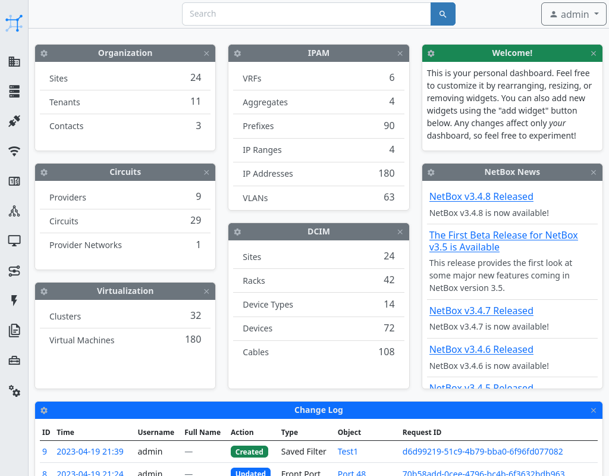
Objective
Create an Ansible project from scratch, automate against an API and make use of an Ansible dynamic inventory.
Guide
Step 1 - Prepare project
Create a new project folder in your home directory:
We will be using a Netbox Demo available online.
Open a new browser tab and go to https://demo.netbox.dev/.
Tip
You can create personal login credentials yourself. Once logged in, you can create an API token which you will need for your automation tasks. Either use the link or click on your username in the upper right corner of the Netbox UI and select API Tokens from the dropdown menu.
Today, you'll need additional Ansible modules. In the first part of the workshop, we only used a handful of modules which are all included in the ansible-core binary. With ansible-core only 69 of the most used modules are included:
[student@ansible-1 ~]$ ansible-doc -l
add_host Add a host (and alternatively a group) to the ansible-playbook in-memory inventory
apt Manages apt-packages
apt_key Add or remove an apt key
apt_repository Add and remove APT repositories
assemble Assemble configuration files from fragments
assert Asserts given expressions are true
async_status Obtain status of asynchronous task
blockinfile Insert/update/remove a text block surrounded by marker lines
command Execute commands on targets
copy Copy files to remote locations
...
Additional modules are installed through collections, search the Collection Index in the Ansible documentation for a module or use the search field.
If, for example, you want to create an EC2 instance in AWS, you will need the module amazon.aws.ec2_instance. To get the module, you'll need the collection aws of the provider amazon. Download the collection with the ansible-galaxy utility:
[student@ansible-1 ~]$ ansible-galaxy collection install amazon.aws
Starting galaxy collection install process
Process install dependency map
Starting collection install process
Downloading https://galaxy.ansible.com/download/amazon-aws-3.2.0.tar.gz to /home/student/.ansible/tmp/ansible-local-55382m3kkt4we/tmp7b2kxag4/amazon-aws-3.2.0-3itpmahr
Installing 'amazon.aws:3.2.0' to '/home/student/.ansible/collections/ansible_collections/amazon/aws'
amazon.aws:3.2.0 was installed successfully
Tip
Well, you won't need the AWS collection, but automating the Netbox with Ansible also requires additional modules, these are not included in the ansible-core binary and need to be installed with Ansible Galaxy.
Achieve the following tasks:
- Find appropriate collection for Netbox automation in the documentation
- Collection installed
You can view the installed collections with this command:
[student@ansible-1 netbox-automation]$ ansible-galaxy collection list
# /home/student/.ansible/collections/ansible_collections
Collection Version
----------------- -------
ansible.posix 1.4.0
community.docker 2.7.0
community.general 5.3.0
Step 2 - Inventory and playbook
Within your newly created project folder, create an inventory file and a playbook file.
Tip
You have to instruct Ansible to communicate with the Netbox API, by default Ansible would try to communicate via SSH. This will not work.
Use the API token you created in the Netbox UI.
Testing the successful communication with the API could be done by querying all available tenants with the nb_lookup plugin. Take a look at the documentation for how to use it, use the search to find it.
Create your playbook and add a task with the debug module, utilizing the lookup plugin.
In the documented example the loop uses the query function, instead of devices search for tenant, the variable to output can be {{ item.value.display }} for the name of the respective tenant.
Run your playbook, if it returns a green ok status, communication is established.
Help wanted?
Use the following task to get a list of all already configured tenants.
- name: Obtain list of tenants from NetBox
debug:
msg: "{{ item.value.display }}"
loop: "{{ query('netbox.netbox.nb_lookup', 'tenants', api_endpoint=https://demo.netbox.dev/, token=YOUR_NETBOX_TOKEN) }}"
loop_control:
label: "ID: {{ item.key }}"
The loop_control is not really necessary, but improves readability.
Tip
You need to input your personal API token.
Achieve the following tasks:
- Inventory and playbook created
- Use variables where possible (and useful)
- Successful communication with API established
Step 3 - Create a new Tenant
Most core objects within NetBox's data model support tenancy. This is the association of an object with a particular tenant to convey ownership or dependency.
The goal is to create a new Netbox tenant with Ansible. The tenant should have the following properties, which can be set with the parameters of the appropriate module:
| Parameter | Value |
|---|---|
| name | Demo Tenant <Initials> |
| slug | demo_tenant_<initials> |
| description | Workshop tenant |
| tenant_group | cc_workshop |
Warning
Replace <Initials> with your personal initials to identify the objects later on.
Achieve the following tasks:
- Tenant created
- Tenant is part of
cc_workshoptenant group - Inspect tenant in the UI
Step 4 - Create group for VMs
Let's add your three managed nodes to a logical group within Netbox. In the Netbox UI, click on Virtualization, here you can find Clusters.
Find an appropriate module to create a cluster and set the following module parameters:
| Parameter | Value |
|---|---|
| name | Demo Tenant <Initials> VMs |
| site | rh_demo_environment |
| cluster_type | Amazon Web Services |
| group | EMEA |
Achieve the following tasks:
- Cluster created
Step 5 - Create VMs
A virtual machine (VM) represents a virtual compute instance hosted within a cluster. Each VM must be assigned to a site and/or cluster.
Let's create multiple virtual machine objects, one for every host in your inventory group web.
As we need additional information about our VMs (number of vCPU cores, memory, disk space), add a task which gathers facts about your managed nodes. Find the appropriate module to do this, Ansible documentation shows you how to do this, the keyword here is delegating facts.
Once you gathered all facts about your managed nodes, add a task to create virtual machine objects in the Netbox with a loop, iterating over the web group of your inventory.
Find the correct module, every VM object should use the following parameters:
| Parameter | Value | Example (rendered to) | |||
|---|---|---|---|---|---|
| name | "{{ hostvars[item]['ansible_fqdn'] }}" |
node2.example.com | |||
| site | rh_demo_environment |
||||
| cluster | Demo Tenant <Initials> VMs |
Demo Tenant TG VMs | |||
| tenant | demo_tenant_<initials> |
student2 | |||
| platform | "{{ hostvars[item]['ansible_distribution'] | lower }}_{{ hostvars[item]['ansible_distribution_major_version'] }}" |
Redhat 8 | |||
| vcpus | "{{ hostvars[item]['ansible_processor_vcpus'] }}" |
2 | |||
| memory | "{{ hostvars[item]['ansible_memtotal_mb'] }}" |
1024 | |||
| disk | "{{ hostvars[item]['ansible_devices']['nvme0n1']['size'] | split(' ') | first | int }}" |
10 | |||
| virtual_machine_role | application-server |
||||
| status | Active |
Warning
Again, replace <initials> with your own Initials.
Achieve the following tasks:
- VM objects for all managed nodes created
Ended: Projects
Ansible Future ↵
Overview
This section shows tools in the Ansible world which will become more and more relevant in the upcoming future. This includes:
- Ansible Navigator
- Execution Environments
- Ansible Builder
Who will use the Ansible navigator?
The automation content navigator (or "Ansible Navigator") is mainly geared towards developers of automation. This can mean people creating automated tasks with available modules, those migrating roles into Collections or those who are developing modules from the ground up. Content navigator runs as a textual user interface and looks great within a terminal session, even while running inside popular code editors with included terminal panes.
Who will use Execution Environments?
Everybody will use Execution environments, not only will they become more relevant for users of Ansible Core, but they are integral to users of the Ansible Automation platform (even if they don't know that they are using EEs). In short, Execution Environments are Container images which run the automation tasks, think about them as an Ansible Control node in a Container.
They are a defined, consistent and portable environment for Ansible Automation consisting of a RHEL Universal Base Image, Ansible Core, Python 3, Ansible Content Collections and all dependencies.
Who will use the Ansible Builder?
Ansible Builder is a tool that aids in the creation of Ansible Execution Environments, no container know-how is necessary, a simple YAML configuration file is used to create the Podman or Docker image. The Ansible builder will be used by Automation developers and Automation platform administrators.